RAIL 2022Original text
A Lexical database of Malagasy adjectives
This is the original text of the paper. Translations are linked above.
Proceedings of the 3rd Workshop on Resources for African Indigenous Languages (RAIL 2022), Journal of the Digital Humanities Association of Southern Africa.
Original text, shown under its licence (CC BY-SA 4.0). Reuse allowed with attribution; share adaptations alike. The translations on this site are by Ernst van Gassen (Arktos AI Lab).
Plain text for reuse, with its licence: English · LICENSE
Affiliations
Joro Ranaivoarison
Department of Malagasy, University of Antananarivo
E-mail addresses removed for privacy. They are in the original PDF.
Abstract
This paper deals with an electronic resource under construction. The objective is to construct a lexical database of Malagasy adjectives. Malagasy is an agglutinative language of Austronesian origin, spoken in the African island of Madagascar. The method used to construct the resource is adapted from the approach of Gross (1989) to electronic dictionaries. The content of the resource is based on linguistic analysis and encoded so as to be used by language-processing software. However, care has been taken that all linguistic information is easily readable and updatable. The resource allows for morphological analysis and generation of adjectives, removing obstacles to the construction of computer applications to process the Malagasy language. The originality of this paper also comes from our proposal of a distinction between adjectives in the usual sense and adjectival forms of other parts of speech.
Keywords
lexical database, Malagasy, adjective, inflection, derivation
1 Introduction
This research takes place in the context of the construction of a general resource for Malagasy language, and focuses on adjectives. This resource is under construction and must be revised and enriched.
The database is designed to be used by language-processing programs. This goal requires a high level of precision and formalization. We borrowed methodological principles from similar successful projects and we used Unitex/GramLab (Paumier, 2003), an open-source, freely available platform of language processing that also offers functionality for constructing language resources.
As compared to traditional grammar and previous work by linguists on adjectives, we distinguish adjectives in the usual sense from adjectival forms of other parts of speech (in this case, nouns).
The next section provides general information about adjectives in Malagasy. Section 3 sums up the approach of Gross (1989) to electronic dictionaries. In Section 4, we describe how (morpheme-internal) allomorphy is represented in the database. Section 5 is about the dictionary of adjectival lemmas in the usual sense, and Section 6 is about the resources that account for adjectival forms of nouns. We report the experiments performed to test the resources in Section 7. The last section contains concluding remarks.
2 Adjectives in Malagasy
Language-independent definitions of adjectives, e.g. "a term used in grammatical classification of words to refer to the main set of items which specify the attributes of nouns" (Crystal, 2008: 11), are suitable for Malagasy, but not precise enough, for example, to distinguish adjectives from verbs with the m- prefix. For that matter, we follow Rajaona (1972: 404) and Ralalaoherivony (1995) who draw the line by using the following criterion: verbs have forms in the circumstantial voice, while adjectives do not. Refer to Rajaona (1972: 521), Keenan & Polinski (1998: 609), Dalrymple et al. (2005) about circumstantial voice. So, mandèha " walk" , mandrày "take" are verbs because the circumstantial forms andehánana, andráisana are in use; and elements as m-a-kòtroka, màtotra are adjectives because the circumstantial forms *akotróhana, *atórana are not attested. (Graphical accents in Malagasy are optional and indicate stress.)
This section reports on the inflection of adjectives and on the distinction between derived and inflected adjectives that stem from nouns.
2.1 Inflection of adjectives
Like verbs, some adjectives receive inflectional markers of grammatical tense in Malagasy (cf. Rajaonarimanana, 1995: 64).
Most adjectives combine with ho to express future tense, hence màro "is/was numerous" /ho màro " will be numerous" , mànta "is/was raw "/ho mànta " will be raw " , etc. This marker of the future tense is not an inflectional morpheme because it can be separated from the adjective by other words.
However, other adjectives show morphological alternation associated with tense, e.g. m-a-fàna (PRS-ADJZ-heat) "is hot" , n-a-fàna (PAST-ADJZ-heat) " was hot" and h-a-fàna (FUT-ADJZ-heat) " will be hot" . Among the about 2,115 adjectives studied for this paper, about 365 take the m:n:h alternation.
Traditional grammarians as Malzac (1950), Rajemisa (1969), and linguists like Rajaona (1972), Rajaonarimanana (1995) consider that m-, ma, mi, man-, -ina, -ana are adjective-forming affixes. Among these, we choose to segment ma-, mi, man-further into the tense markers m-, n-, h-and the adjective-forming affixes a-, i-, an-, whenever the morphological alternation mi, ma-, man-/ni, na, nan-/hi, ha, han-correlates with the difference of tense.
Some adjectives in Malagasy take imperative suffixes (cf. Rajaona, 1972; Catz & Catz, 2017) such as -a in m-a-heréz-a (PRS-ADJZ-power-IMP) "be powerful" vs. m-à-hery (PRS-ADJZ-power) "powerful" , m-a-zoto-a (PRS-ADJZ-diligence-IMP) "be industrious" vs. m-a-zòto (PRS-ADJZ-diligence) "industrious" . For now, the imperative mood is not taken into account in the resource.
2.2 Derived or inflected adjectives
Many Malagasy adjectives are derived from nouns. As is usual in derivational morphology, the meaning or the syntax of the derived adjective is not entirely predictable. In Table 1, for example, the base nouns kòtroka, hìdy, jèmby have the following derivations: m-a-kòtroka, m-a-hìdy, jembé-na.
Table 1: Derived forms with unpredictable meaning or syntax
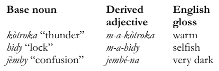
Other adjective-forming affixes have been described in Malzac (1950), Rajemisa (1969) and Rajaona (1972)[cf. Subsection 5.5 below].
In Malagasy, however, the grammatical relation between nouns and adjectives can also fall under inflectional morphology. For about 5% of the adjectives we studied in this research, the meaning and syntax of the denominal adjective are entirely predictable based on the noun stem and the morphological process involved, as in Table 2.
Table 2: Inflected forms with predictable meaning and syntax
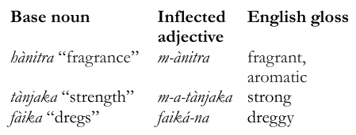
Such pairs are so regular that the process can be regarded as inflectional, even if the base form and the derived form belong to distinct parts of speech. In other words, these adjectives can be considered as inflected adjectival forms of the corresponding nouns, just like participles are inflected adjectival forms of verbs in English: on the one hand, they may behave as adjectives (cf. the term 'participial adjective' used for example by Kennedy & McNally (1999)), but on the other hand they belong to verb conjugation.
The resource includes derived adjectives such as m-a-kòtroka (PRS-ADJZ-thunder) " warm" , adjectival inflected forms of nouns like m-ànitra (ADJZ-fragrance) "fragrant" , and base adjectives like àvo (ADJ) "high" .
The distinction between derived and inflected adjectives is an inescapable reality of Malagasy, but the main affixes serve both as derivational and inflectional:
- i-, in m-i-kodiadìa "big and fat (of a child)" , from kodìa " wheel" , is derivational, but in m-i-kitoantòana "rough, uneven, craggy " , from kitoantòana " uneven ground, rough place" , i- is inflectional;
- as for a- in m-a-tètika "frequent" , from tètika "ornamental scarification; cutting up small pieces" , it is derivational, but in m-a-fàna "hot" , from fàna "heat" , a- is inflectional;
- as for m- in m-èndrika "fit, proper, worthy " , from èndrika "face, likeness, image" , m- is derivational, but in m-ànitra "fragrant" , from hànitra "fragrance" , m- is inflectional.
Consequently, during the construction of the resource, we face difficult decisions in classifying denominal adjectives as derived or inflected, especially when the prefix forming the adjective is m-. In such cases, we analyse the adjective as an inflected form of a noun only when we identify a pair of syntactic constructions such as Misy hànitra N0 "N0 has fragrance" = M-ànitra N0 "N0 is fragrant" , where mìsy "there is" or mànana "have" is a support verb (Ranaivoson, 1996; Lakoarisoa et al., 2011; Jaozandry, 2014; Hamitramalala, 2017), and N0 is an accepted subject noun. In the case of m-ày "on fire" , m-àfy "hard" , respectively from hày "burning" , hàfy "hardship" , there are no such pairs of syntactic constructions, since the nominal construction is not in use:
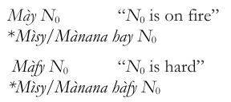
Thus, we encoded them as derived adjectives in the resource. Such lexicological decisions border on the arbitrary, but formal criteria are the best way we know to make them reproducible.
Verbs with a resultative prefix, e.g. mahatalànjona "amazing" , mahavàriana "stunning" are considered as verbal forms of talanjona "amazed" , varìana "stunned" (cf. Rajaona, 2004:58) and encoded in our database in the framework of conjugation (Ranaivoraison et al., 2013).
3 Electronic dictionaries
The method used to construct the resource for adjectives of Malagasy is adapted from the approach of Gross (1989) to electronic dictionaries. This approach recommends several methodological safeguards.
First, for lexical databases to be usable by programs, all data must be explicit. This situation contrasts with that of dictionaries for human readers, where some information may remain implicit, since readers rely on their linguistic proficiency to infer it.
Next, lexicological and lexicographical decisions are based on the observation of a sufficiently large number of lexical entries. Entries are systematically inventoried and decisions are based on this inventory, not on sporadic observations on a limited sample of entries, a practice that would be more likely to necessitate revisions of these decisions.
The resources must be readable, so that they can be updated.
Finally, modes of inflection are defined explicitly, so that the inflected forms of a stem can be generated automatically. A mode of inflection is the set of morphological changes underwent by a stem to generate its inflected forms. Several lexical entries can share the same inflectional mode, as ring and sing in English. The method requires that inflectional modes are defined independently of one another, in order to avoid constructing a hierarchy of general rules and exceptional rules, since such hierarchies are usually complex to maintain later, as the database undergoes updates. As each inflectional mode is independent, updating one does not require updating others. In consequence, we assign an identifier to each inflectional mode and we mark in each entry of the dictionary the identifier of the type of inflection applicable. Thus, knowing if a rule is applicable to a lexical entry does not require applying it. This contrasts with Two-level morphology (Koskenniemi, 1983), where rule scope is encoded in rules, so that knowing if a lexical entry is affected by a change in a rule requires applying both versions of the rule. In addition, two-level rules are ordered, so that knowing if a lexical entry is affected by a change in rule order requires applying both versions of all rules. These features are practical obstacles to updates, corrections and extensions of two-level databases.
Thus, our approach encodes the generation of inflected forms from their stems, providing a formal link between them, e.g. between sing and singing in English. However, the approach does not do the same between derivatives and their bases, as speak and speech, since semantic and syntactic irregularities reduce the potential applications of such generation. Thus, derived words such as m-èndrika "fit, proper, worthy " , m-i-kodiadìa "big and fat (of a child)" are encoded as stems.
Gross' approach, devised for inflectional languages, has been extended to agglutinative languages (Berlocher et al., 2006; Ranaivoarison et al., 2013) by distinguishing two levels of morphological changes:
- morpheme-internal allomorphy, e.g., the noun sómotra "beard" becomes somór immediately before some suffixes,
- affixations, e.g., -ina, a morpheme of formation of adjectival forms, can be suffixed to somór, giving somórina "bearded" .
Through the two steps corresponding to these two levels, the inflected form somòrina can be generated from the lemma sómotra, or conversely, the lemma can be recognised from the inflected form.
The Unitex open-source platform of language processing (Paumier, 2003) is compatible with resources devised according to this approach and encoded in the DELA format (Gross 1989: 8). Unitex performs top-quality inflection, compression and lookup (Neme, Paumier, 2019) of lexical databases encoded in this format. In contrast, the Text encoding initiative's dictionary encoding formats are mainly designed for human-oriented dictionaries (TEI Consortium, 2022) and do not address the processing of lexical databases.
In the electronic-dictionary approach, lexical databases mainly cover parts-of-speech and inflection. This contrasts with the lexicon-grammar approach, also proposed by Gross (Elia, 1978), which also investigates the applicability of syntactic operations. Due to this difference, sense distinctions are more finegrained in the latter approach (Laporte, 1991).
4 Allomorphy
This section provides information about morpheme-internal allomorphy and how it is encoded so that lexical variants of stems can be produced automatically. We list the phenomena that affect stems and we describe graphs that encode allomorphy.
4.1 Phenomena of allomorphy
Immediately before or after affixes, some stems do not vary, as in èrika "drizzling rain"/ m-èrika "drizzly, misty " , dìo "cleanliness, purity " /m-a-dìo "clean, clear, pure" , but most do. They can undergo 5 types of variation:
- prosodic alternations as in sòmotra/somór (the accent shifts from the first ò to the second ó)
- insertion of a letter as in safòfoka/tsafòfoka (insertion of t before the stem in the inflected form mantsafòfoka)
- substitution of a letter hàtsiaka/gàtsiaka (substitution of g in the inflected form mangàtsiaka for h in the stem)
- extension as in nòfo/nofós (insertion of s in the inflected form nofósana)
- deletion of a letter as in vorètra/orètra (deletion of the letter v of the stem in the inflected form mamorètra) or in sòmotra / somór (deletion of the t and a of sòmotra in the inflected form somórina)
All allomorphic stems of adjectives undergo one or several of the phenomena above in their lexical variants.
For a deeper study of the phenomena affecting the stems in Malagasy, refer to Rajaona (2004).
4.2 Encoding allomorphy with graphs
To encode the lexical variants of stems, we attach to each entry a code that identifies accurately the applicable variations. These variations are encoded in the form of a graph like that of Fig. 1, which produces automatically the lexical variants of stems like pànda "freckles" , kilèma "deformity " , kìbo "belly " .
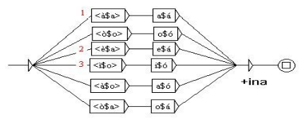
Figure 1: Graph of allomorphy '0v'
Path 1 encodes pànda > pandá in pandáina "freckly, sunburnt" ; path 2, kilèma > kilemá in kilemáina "maimed" ; and path 3, kìbo > kibó in kibóina "bigbellied" . This technique of lexical marking facilitates updates. The '0v' identifier is the name of the graph and is attached to those words to encode these prosodic alternations. So, several lexical entries such as tràtra "breast" , tsikòko "scabs" share the same inflectional mode '0v' (identifier) to produce automatically lexical variants as tratrá, tsikokó.
Other lemmas have -ka, -tra, -na endings, and their final -a is missing in most of their allomorphs: the corresponding graphs specify the deletion of this vowel.
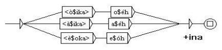
Figure 2: Graph of allomorphy '1v' for lemmas in -ka.
For example, the '1v' graph in Fig. 2 deletes the ending -ka and inserts a letter h, in addition to the prosodic and/or vocalic alternations, encoding variations such as dònika > donéh in donéhina "suffering from mumps" , fàsika > faséh in faséhina "sandy " , tsèroka > tseróh in tseróhina "dirty, scurfy " .
If the lemma contains inflectional prefixes, the graphs also strip them off.
Thus, graphs of allomorphy for stems in Malagasy are divided in 4 types: for those with ka, tra, or na endings, and for those with none of these endings. In addition, they specify some of the five phenomena identified in Subsection 4.1. Thirty graphs of allomorphy are used for about 2,115 adjectives.
We will now describe the other resources for lexical entries of adjectives, and then those for adjectival forms of nouns.
5 Encoding lexical entries of adjectives
Base adjectives such as àntitra "old" , àvo "high" , and derived adjectives such as makìkitra "determined" , m-a-kòtroka " warm" are all encoded in the lexical database as adjectival entries without distinction.
We report on the different components of this resource: lexical entries and graphs of affixation, and we mention the main inflectional and derivational morphemes of adjectival entries.
5.1 Lexical entries
Our resource contains about 2,000 adjectival lemmas (Fig. 3). Entries and morphological codes are separated with a comma. The letter "A" is the morphological code of adjectives. The code in parentheses indicates the graph of allomorphy applicable to the entry, and the name "ad1" indicates the graph of affixation for the words that take the m-:n-:h- morphological alternation, as in malàdy "is quick to hear" : nalády " was quick to hear" : halády " will be quick to hear" .
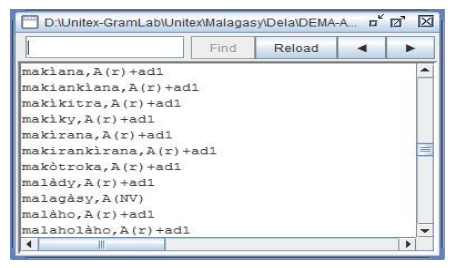
Figure 3: Resource of adjectival entries.
5.2 Graphs of affixation
Graphs of affixation specify which combinations of grammatical and lexical morphemes make up inflected forms of adjectives. In the present state of the lexical database, the graphs of affixation take into account the tense prefixes m-:n-:h-, but not yet affixes for imperative.
Take for example the lemmas m-arènina "deaf " , makàka "spacious" . The m- in the beginning is the prefix of present tense, so the stems are arènina, akàka, which are generated by the graph of allomorphy identified in their entries. The "ad1" graph of affixation (Fig. 4) specifies that this stem takes the three tense prefixes.
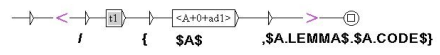
Figure 4: Graph of affixation "ad1" .
In this graph, the 't1' box is a call to a subgraph that represents the m-:n-:h- morphological alternation. The <A+0+ad1> box stands for the relevant variant of the stem, i.e. arènina, akàka, among others.
Among the about 2,000 adjectival entries, about 505 begin with m, about 300 of which take the m:n:h alternation. Adjectives without the m-:n-:h- lternation, such as mòana "speechless" (*nòana and *hòana are not in use), form a syntactic future with ho, as in ho mòana " will be speechless" .
5.3 Inflectional and grammatical codes
The codes of parts of speech used in this part of the database are:
- A for adjective
- T for tense marker
Inflectional codes are:
- r, p, f respectively for present, past, future tenses
- n for indicative mood.
5.4 Main inflectional morphemes of adjectival entries
Table 3 contains the main inflectional morphemes used in this part of the database.
Table 3: Main inflectional morphemes of adjectives
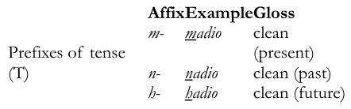
5.5 Derivational affixes of adjectives
Table 4 shows different affixes of adjectives generally considered as derivational. The words containing those affixes are not numerous. In the resource, we analyse them as derivatives and encode them as adjectival lemmas. Since our database does not attempt to link them to their bases (cf. Section 3), these affixes have no formal existence as such in the database: the affix/base segmentation is not encoded.
In some denominal adjectival lemmas in m-, the initial m- is not present in the base noun, as in màmy "sweet" from hàmy "sweetness" , màty "dead" from fàty "death" , but it does not take the m:n:h tense alternation. In these entries, we analyse m- as a derivational adjectivizing prefix, just like those of Table 4, and we do not encode the affix/base segmentation.
Table 4: Derivational affixes of adjectives
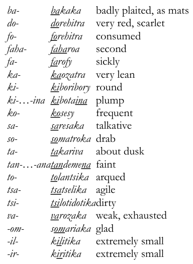
6 Adjectival forms of nouns
In our lexical database, adjectival inflected forms of nouns as vintánina " who has a destiny " , from vìntana "destiny " , or mazòto "diligent, industrious" , from zòto "diligence" , are encoded in a dictionary of nouns, in the form of resources that allow for segmenting and generating these adjectival forms. For example, the noun lòto "filth, dirtiness" receives the inflectional prefix forming adjectives a-, and the tense prefixes m-, n- or h-, hence malòto "is filthy, dirty " , nalòto " was filthy, dirty " , halòto " will be filthy, dirty " .
We report in this section on the resources for these forms: lexical entries and graphs of affixation, and we list the relevant inflectional morphemes.
6.1 Lexical entries
The resource contains about 400 entries of nouns (Fig. 5), 115 of which have adjectival inflected forms. The code "N" is for 'noun' and the codes in parentheses identify the graphs of allomorphy. The graphs of allomorphy are those described in Subsection 4.2. The codes "A6" , "A2" or "A3" are for the graphs of affixation. For example, nouns with the code A3, such as lòto, receive the m-: n-: h- morphological alternation of tense and the prefix of formation of adjectives a-, hence malòto, which is thus segmented as m-a-lòto, where the lemma is represented by the nominal stem lòto. The 'A3' graph encodes this segmentation in three morphemes and formally represents a- as an inflectional prefix.
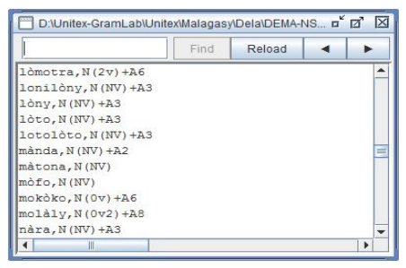
Figure 5: Resource for adjectival inflected forms of nouns.
This contrasts with m-arènina "deaf " , analysed as m-arènina in Subsection 5.2: as m-arènina is an adjectival lemma, it does not contain any inflectional prefix of formation of adjectives, and the first a is part of the stem. Thus, graphs of affixation for adjectival forms of nouns are different from those for adjectival entries.
6.2 Graphs of affixation
We inventory thirteen graphs for adjectival forms of nouns.
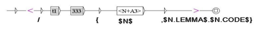
Figure 6: Graph of affixation 'A3' .
The 'A3' graph (Fig. 6) describes the combinations of affixes that make up adjectival forms such as m-a-dìty "gummy, resinous" , m-a-sìra "salty " and their own inflected forms. The 't1' box represents the m-:n-:h- morphological alternation, the '333' box contains the prefix a-forming adjectives (PAdj) and the <N+A3> box indicates to which nouns the graph is applicable, here dìty "gum, resin" , sìra "salt" , among others.
6.3 Grammatical codes
The additional codes of parts of speech used in this part of the database are:
- N for 'noun'
- PAdj for 'prefix forming adjectives'
- SAdj for 'suffix forming adjectives' .
6.4 Inflectional morphemes of adjectives
About 65 of the nominal entries that we studied produce adjectival forms that take the m-:n-:h-alternation. Table 5 contains the additional inflectional morphemes used in this part of the database.
Table 5: Inflectional morphemes of adjectives
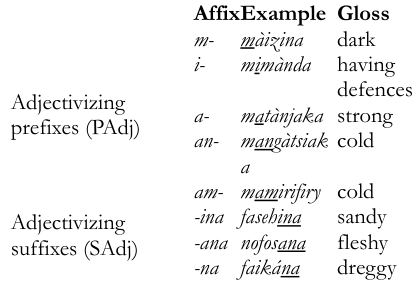
The inflectional adjectivizing prefix m- occurs in words as màizina "dark" from àizina "darkness" , m-ànitra "fragrant" from hànitra "fragrance" : in these forms, it does not take the role of tense prefix. They form a syntactic future with ho.
7 Tests
In a novel by Clarisse Ratsifandrihamanana, a well-known Malagasy writer, which has 2,400 sentences and about 55,600 tokens, we recognize with our database about 380 unique forms of adjectives. The representation of the result with Unitex is different for base or derived adjectives and for adjectival forms of nouns.
Two experiments are presented in this section: segmentation and generation.
7.1 Segmentation
In this experiment, the Unitex platform used the lexical database and the graphs to segment text. The segmentation of mareforèfo "a bit fragile" , a derived adjective that accepts the m-:n-:h-morphological alternation, is presented in Fig. 7.
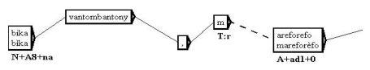
Figure 7: Representation of a derived adjective with a tense marker.
The two boxes connected by a broken line represent 1) m-, recognized as a tense marker (T) of present tense (r), and 2) areforefo, labeled A+ad1+0, which means that it is an adjective and lists two features; this form is attached to the lemma mareforèfo.
An adjectival inflected form of a noun is segmented as shown in Fig. 8.
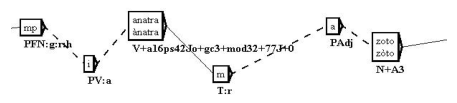
Figure 8: Representation of an adjectival form of a noun.
In mpianatra mazòto "industrious student" , mazòto "diligent, industrious" is an adjectival inflected form of zòto "diligence" . Unitex shows the morpheme of tense m- (present), the morpheme forming adjectives a- (Padj) and the nominal stem (N+A3).
7.2 Generation of adjectives
Unitex has a generator of words that lists the adjectival inflected forms specified by the database (Fig. 9). Each semicolon begins a new bundle of inflectional features. The tense codes :r, :p and :f are mutually exclusive because a word cannot be in the same interpretation at two different grammatical tenses, but the other code n qualifies the same interpretation as the tense preceding them. Thus, A+A8+na:rn:pn means that bikána " well formed" can be in the present or in the past tense, but in both cases it is in the indicative.
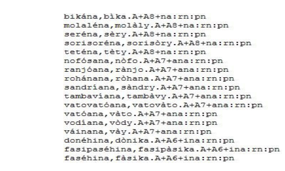
Figure 9: Generation of adjectives
8 Conclusion
We described a lexical database of Malagasy adjectives under construction. The content of the resource is based on linguistic analysis, bearing in mind relevant methodological safeguards. We make a distinction between adjectives in the usual sense and adjectival forms of nouns. The database can be used by language-processing software. The resource allows for morphological analysis and generation of adjectives. It is not limited to the adjectival forms occurring in a corpus of texts, but takes into account our competence as a native speaker and grammatical tradition.
This research has several potential applications. Its results can be used in grammar textbooks to describe the inflection of Malagasy adjectives. Linguists can use them to launch queries for grammatical configurations containing adjectives, e.g. noun phrases. Finally, lexical databases remove obstacles to the construction of computer applications to process languages.
Acknowledgements
We address our special thanks to the reviewers for their relevant comments and suggestions for the clarity of our paper.
References
Andriamise, L, Ranaivoson, JF, Rakotoalison, SF 2011, "Les locutions support en malgache. Le cas de misy azy, " Lexis and Grammar, University of Cyprus, pp. 21-28.
Berlocher, I, Huh, HG, Laporte, E, Nam, JS 2006, "Morphological annotation of Korean with directly maintainable resources" , Proceedings of the Fifth International Conference on Language Resources and Evaluation (LREC'06), Genoa (Italy).
Catz, I & Catz, S 2017, Standard Malagasy Grammar & List of 410+ Common Verb Conjugation, edited by Kimmerling Razafindrina, Fetra Marc Humbert Rahajason and Vololona Fenohaja.
Crystal, D 2008, A dictionary of linguistics and phonetics, UK, Blackwell.
Dalrymple, M, Liakata, M & Mackie, L 2005, "A Two-level Morphology of Malagasy " , Proceedings of the 19th Pacific Asia Conference on Language, Information and Computation, pages 83-94, Taipei, Taiwan, R.O.C, Institute of Linguistics, Academia Sinica.
Elia, A 1978 "Pour un lexique-grammaire de la langue italienne : les complétives objet" , Lingvisticae Investigationes 2 ( 2), pp. 233-276.
Gross, M 1989, "La construction de dictionnaires électroniques" , Annales des Télécommunications, vol. 44 (1-2), pp. 4-19.
Hamitramalala, R 2017, Vers une typologie des collocations à verbe support en malgache, PhD, Université de Montréal.
Jaozandry, M 2014, Les prédicats nominaux du Malgache. Étude comparative avec le français, PhD, Université Paris-Nord.
Keenan, E & Polinski, M 1998, "Malagasy (Austronesian)" , The handbook of Morphology, ed. Andrew Spencer and Arnold M. Zwicky, New Jersey, John Wiley & Sons.
Kennedy, Ch & McNally, L 1999, "From Event Structure to Scale Structure : Degree Modification in Deverbal Adjectives" , Tanya Matthews and Devon Strolovitch (eds), 9th Semantics and Linguistic Theory Conference, pp. 163-180.
Koskenniemi, K 1983, Two-level Morphology: A General Computational Model for Word-Form Recognition and Production. PhD, University of Helsinki.
Laporte, E 1991, "Separating Entries in Electronic Dictionaries of French" , Sprache - Kommunikation - Informatik. Akten des 26. Linguistischen Kolloquiums, Poznan 1991, J. Darski and Z. Vetulani eds., Tübingen: Max Niemeyer, pp.173-179.
Malzac, RP 1950, Grammaire malgache, Paris, Société d'éditions géographiques, maritimes et coloniales.
Neme, A & Paumier, S 2019, "Restoring Arabic vowels through omission-tolerant dictionary lookup" , Language Resources and Evaluation 54, pp. 487-551.
Paumier, S 2003, Unitex manual, University of Marne-la-Vallée, Paris.
Rajaona, S 1972, Structure du malgache¸Fianarantsoa, Ambozontany.
Rajaonarimanana, N 1995, Grammaire moderne de la langue malgache, Paris, L'Asiathèque.
Rajemisa-Raolison, R 1969, Grammaire malgache, Fianarantsoa, Ambozontany.
Ralalaoherivony, BS 1995, Lexique-grammaire du malgache. Constructions adjectivales, Thèse de doctorat, Université Paris 7.
Ranaivoarison, J, Laporte, E & Ralalaoherivony, BS 2013, "Formalization of Malagasy conjugation" , Language and Technology Conference, Poznań (Poland).
Ranaivoson, JF 1996, La nominalisation en malgache. Étude des formes manao N, PhD, Université d'Antananarivo.
Richardson, J 1885, A new Malagasy-English Dictionary, Antananarivo, The London Missionary Society.
TEI Consortium, eds. (2022) TEI P5: Guidelines for Electronic Text Encoding and Interchange. 4.4.
A Lexical database of Malagasy adjectives
Une base de données lexicale des adjectifs malgaches
Affiliations
Joro Ranaivoarison
Department of Malagasy, University of Antananarivo
Affiliations
Joro Ranaivoarison
Department of Malagasy, University of Antananarivo
Abstract
Résumé
This paper deals with an electronic resource under construction. The objective is to construct a lexical database of Malagasy adjectives. Malagasy is an agglutinative language of Austronesian origin, spoken in the African island of Madagascar. The method used to construct the resource is adapted from the approach of Gross (1989) to electronic dictionaries. The content of the resource is based on linguistic analysis and encoded so as to be used by language-processing software. However, care has been taken that all linguistic information is easily readable and updatable. The resource allows for morphological analysis and generation of adjectives, removing obstacles to the construction of computer applications to process the Malagasy language. The originality of this paper also comes from our proposal of a distinction between adjectives in the usual sense and adjectival forms of other parts of speech.
Cet article traite d'une ressource électronique en construction. L'objectif est de construire une base de données lexicale des adjectifs malgaches. Le malgache est une langue agglutinante d'origine austronésienne, parlée sur l'île africaine de Madagascar. La méthode utilisée pour construire la ressource est adaptée de l'approche de Gross (1989) pour les dictionnaires électroniques. Le contenu de la ressource est basé sur une analyse linguistique et encodé pour être utilisé par des logiciels de traitement du langage. Cependant, il a été veillé à ce que toutes les informations linguistiques soient facilement lisibles et mises à jour. La ressource permet l'analyse morphologique et la génération d'adjectifs, en supprimant les obstacles à la construction d'applications informatiques pour traiter le langage malgache. L'originalité de cet article réside également dans notre proposition d'une distinction entre les adjectifs au sens habituel et les formes adjectivales d'autres parties du discours.
Keywords
Mots-clés
lexical database, Malagasy, adjective, inflection, derivation
base de données lexicale, malgache, adjectif, flexion, dérivation
1 Introduction
1 Introduction
This research takes place in the context of the construction of a general resource for Malagasy language, and focuses on adjectives. This resource is under construction and must be revised and enriched.
Cette recherche s'inscrit dans le cadre de la construction d'une ressource générale pour la langue malgache, et se concentre sur les adjectifs. Cette ressource est en construction et doit être révisée et enrichie.
The database is designed to be used by language-processing programs. This goal requires a high level of precision and formalization. We borrowed methodological principles from similar successful projects and we used Unitex/GramLab (Paumier, 2003), an open-source, freely available platform of language processing that also offers functionality for constructing language resources.
La base de données est conçue pour être utilisée par des programmes de traitement de langue. Cet objectif nécessite un haut niveau de précision et de formalisation. Nous avons emprunté des principes méthodologiques à des projets similaires réussis et nous avons utilisé Unitex/GramLab (Paumier, 2003), une plateforme de traitement du langage open-source et librement disponible qui offre également des fonctionnalités pour la construction de ressources linguistiques.
As compared to traditional grammar and previous work by linguists on adjectives, we distinguish adjectives in the usual sense from adjectival forms of other parts of speech (in this case, nouns).
Par rapport à la grammaire traditionnelle et aux travaux antérieurs des linguistes sur les adjectifs, nous distinguons les adjectifs au sens habituel des formes adjectivales des autres parties du discours (dans ce cas, les noms).
The next section provides general information about adjectives in Malagasy. Section 3 sums up the approach of Gross (1989) to electronic dictionaries. In Section 4, we describe how (morpheme-internal) allomorphy is represented in the database. Section 5 is about the dictionary of adjectival lemmas in the usual sense, and Section 6 is about the resources that account for adjectival forms of nouns. We report the experiments performed to test the resources in Section 7. The last section contains concluding remarks.
La section suivante fournit des informations générales sur les adjectifs en malgache. La section 3 résume l'approche de Gross (1989) aux dictionnaires électroniques. Dans la section 4, nous décrivons comment l'allomorphie (interne aux morphèmes) est représentée dans la base de données. La section 5 traite du dictionnaire des lemmes adjectivaux au sens habituel, et la section 6 traite des ressources qui rendent compte des formes adjectivales des noms. Nous rapportons les expériences réalisées pour tester les ressources dans la section 7. La dernière section contient des remarques conclusives.
2 Adjectives in Malagasy
2 Adjectifs en malgache
Language-independent definitions of adjectives, e.g. "a term used in grammatical classification of words to refer to the main set of items which specify the attributes of nouns" (Crystal, 2008: 11), are suitable for Malagasy, but not precise enough, for example, to distinguish adjectives from verbs with the m- prefix. For that matter, we follow Rajaona (1972: 404) and Ralalaoherivony (1995) who draw the line by using the following criterion: verbs have forms in the circumstantial voice, while adjectives do not. Refer to Rajaona (1972: 521), Keenan & Polinski (1998: 609), Dalrymple et al. (2005) about circumstantial voice. So, mandèha " walk" , mandrày "take" are verbs because the circumstantial forms andehánana, andráisana are in use; and elements as m-a-kòtroka, màtotra are adjectives because the circumstantial forms *akotróhana, *atórana are not attested. (Graphical accents in Malagasy are optional and indicate stress.)
Les définitions indépendantes de la langue des adjectifs, par exemple "un terme utilisé dans la classification grammaticale des mots pour désigner l'ensemble principal des éléments qui spécifient les attributs des noms" (Crystal, 2008: 11), conviennent au malgache, mais ne sont pas assez précises, par exemple, pour distinguer les adjectifs des verbes avec le préfixe m-. À cet égard, nous suivons Rajaona (1972 : 404) et Ralalaoherivony (1995) qui tracent la ligne en utilisant le critère suivant : les verbes ont des formes à la voix circumstantielle, tandis que les adjectifs n'en ont pas. Voir Rajaona (1972 : 521), Keenan & Polinski (1998 : 609), Dalrymple et al. (2005) sur la voix circumstantielle. Ainsi, mandèha « marcher », mandrày « prendre » sont des verbes parce que les formes circonstancielles andehánana, andráisana sont en usage ; et des éléments comme m-a-kòtroka, màtotra sont des adjectifs parce que les formes circonstancielles *akotróhana, *atórana ne sont pas attestées. Les accents graphiques en malgache sont facultatifs et indiquent l'accent tonique.
This section reports on the inflection of adjectives and on the distinction between derived and inflected adjectives that stem from nouns.
Cette section rend compte de l'inflexion des adjectifs et de la distinction entre les adjectifs dérivés et infléchis qui découlent des noms.
2.1 Inflection of adjectives
2.1 Flexion des adjectifs
Like verbs, some adjectives receive inflectional markers of grammatical tense in Malagasy (cf. Rajaonarimanana, 1995: 64).
Comme les verbes, certains adjectifs reçoivent des marqueurs flexionnels de temps grammatical en malgache (cf. Rajaonarimanana, 1995 : 64).
Most adjectives combine with ho to express future tense, hence màro "is/was numerous" /ho màro " will be numerous" , mànta "is/was raw "/ho mànta " will be raw " , etc. This marker of the future tense is not an inflectional morpheme because it can be separated from the adjective by other words.
La plupart des adjectifs se combinent avec ho pour exprimer le temps futur, d'où màro « est/était nombreux » / ho màro « sera nombreux », mànta « est/était cru » / ho mànta « sera cru », etc. Ce marqueur du temps futur n'est pas un morphème flexionnel parce qu'il peut être séparé de l'adjectif par d'autres mots.
However, other adjectives show morphological alternation associated with tense, e.g. m-a-fàna (PRS-ADJZ-heat) "is hot" , n-a-fàna (PAST-ADJZ-heat) " was hot" and h-a-fàna (FUT-ADJZ-heat) " will be hot" . Among the about 2,115 adjectives studied for this paper, about 365 take the m:n:h alternation.
Cependant, d'autres adjectifs montrent une alternance morphologique associée au temps, par exemple m-a-fàna (PRS-ADJZ-chaleur) « il fait chaud », n-a-fàna (PAST-ADJZ-chaleur) « il faisait chaud » et h-a-fàna (FUT-ADJZ-chaleur) « il fera chaud ». Parmi les quelque 2 115 adjectifs étudiés pour cet article, environ 365 prennent l’alternance m:n:h.
Traditional grammarians as Malzac (1950), Rajemisa (1969), and linguists like Rajaona (1972), Rajaonarimanana (1995) consider that m-, ma, mi, man-, -ina, -ana are adjective-forming affixes. Among these, we choose to segment ma-, mi, man-further into the tense markers m-, n-, h-and the adjective-forming affixes a-, i-, an-, whenever the morphological alternation mi, ma-, man-/ni, na, nan-/hi, ha, han-correlates with the difference of tense.
Les grammairiens traditionnels comme Malzac (1950), Rajemisa (1969), et les linguistes comme Rajaona (1972), Rajaonarimanana (1995) considèrent que m-, ma, mi, man-, -ina, -ana sont des affixes formant des adjectifs. Parmi ceux-ci, nous choisissons de segmenter davantage ma-, mi, man- en marqueurs de temps m-, n-, h- et en affixes de formation d'adjectifs a-, i-, an-, chaque fois que l'alternance morphologique mi, ma-, man-/ni, na, nan-/hi, ha, han- est corrélée à la différence de temps.
Some adjectives in Malagasy take imperative suffixes (cf. Rajaona, 1972; Catz & Catz, 2017) such as -a in m-a-heréz-a (PRS-ADJZ-power-IMP) "be powerful" vs. m-à-hery (PRS-ADJZ-power) "powerful" , m-a-zoto-a (PRS-ADJZ-diligence-IMP) "be industrious" vs. m-a-zòto (PRS-ADJZ-diligence) "industrious" . For now, the imperative mood is not taken into account in the resource.
Certains adjectifs en malgache prennent des suffixes impératifs (cf. Rajaona, 1972 ; Catz & Catz, 2017) tels que -a dans m-a-heréz-a (PRS-ADJZ-power-IMP) « sois puissant » vs. m-à-hery (PRS-ADJZ-power) « puissant », m-a-zoto-a (PRS-ADJZ-diligence-IMP) « sois industrieux » vs. m-a-zòto (PRS-ADJZ-diligence) « industrieux ». Pour l'instant, le mode impératif n'est pas pris en compte dans la ressource.
2.2 Derived or inflected adjectives
2.2 Adjectifs dérivés ou infléchis
Many Malagasy adjectives are derived from nouns. As is usual in derivational morphology, the meaning or the syntax of the derived adjective is not entirely predictable. In Table 1, for example, the base nouns kòtroka, hìdy, jèmby have the following derivations: m-a-kòtroka, m-a-hìdy, jembé-na.
Beaucoup d'adjectifs malgaches sont dérivés de noms. Comme c'est habituel en morphologie dérivationnelle, le sens ou la syntaxe de l'adjectif dérivé n'est pas entièrement prévisible. Dans le tableau 1, par exemple, les noms de base kòtroka, hìdy, jèmby ont les dérivations suivantes : m-a-kòtroka, m-a-hìdy, jembé-na.
Table 1: Derived forms with unpredictable meaning or syntax
Tableau 1: Formes dérivées ayant une signification ou une syntaxe imprévisible
Other adjective-forming affixes have been described in Malzac (1950), Rajemisa (1969) and Rajaona (1972)[cf. Subsection 5.5 below].
D'autres affixes formant des adjectifs ont été décrits dans Malzac (1950), Rajemisa (1969) et Rajaona (1972) [cf. sous-section 5.5 ci-dessous].
In Malagasy, however, the grammatical relation between nouns and adjectives can also fall under inflectional morphology. For about 5% of the adjectives we studied in this research, the meaning and syntax of the denominal adjective are entirely predictable based on the noun stem and the morphological process involved, as in Table 2.
En malgache, cependant, la relation grammaticale entre les noms et les adjectifs peut également tomber sous la morphologie flexionnelle. Pour environ 5% des adjectifs que nous avons étudiés dans cette recherche, le sens et la syntaxe de l'adjectif dénominal sont entièrement prévisibles en fonction de la racine du nom et du processus morphologique impliqué, comme dans le tableau 2.
Table 2: Inflected forms with predictable meaning and syntax
Tableau 2 : Formes infléchies avec signification et syntaxe prévisibles
Such pairs are so regular that the process can be regarded as inflectional, even if the base form and the derived form belong to distinct parts of speech. In other words, these adjectives can be considered as inflected adjectival forms of the corresponding nouns, just like participles are inflected adjectival forms of verbs in English: on the one hand, they may behave as adjectives (cf. the term 'participial adjective' used for example by Kennedy & McNally (1999)), but on the other hand they belong to verb conjugation.
De telles paires sont si régulières que le processus peut être considéré comme flexionnel, même si la forme de base et la forme dérivée appartiennent à des parties du discours distinctes. En d'autres termes, ces adjectifs peuvent être considérés comme des formes adjectives fléchies des noms correspondants, tout comme les participes sont des formes adjectives fléchies des verbes en anglais : d'une part, ils peuvent se comporter comme des adjectifs (cf. le terme 'participial adjective' utilisé par exemple par Kennedy & McNally (1999)), mais d'autre part ils appartiennent à la conjugaison des verbes.
The resource includes derived adjectives such as m-a-kòtroka (PRS-ADJZ-thunder) " warm" , adjectival inflected forms of nouns like m-ànitra (ADJZ-fragrance) "fragrant" , and base adjectives like àvo (ADJ) "high" .
La ressource inclut des adjectifs dérivés tels que m-a-kòtroka (PRS-ADJZ-tonnerre) « chaud », des formes adjectivales fléchies de noms comme m-ànitra (ADJZ-parfum) « odorant », et des adjectifs de base comme àvo (ADJ) « haut ».
The distinction between derived and inflected adjectives is an inescapable reality of Malagasy, but the main affixes serve both as derivational and inflectional:
La distinction entre adjectifs dérivés et fléchis est une réalité incontournable du malgache, mais les principaux affixes servent à la fois de dérivationnels et de flexionnels :
i-, in m-i-kodiadìa "big and fat (of a child)" , from kodìa " wheel" , is derivational, but in m-i-kitoantòana "rough, uneven, craggy " , from kitoantòana " uneven ground, rough place" , i- is inflectional;
i-, dans m-i-kodiadìa « gros et gras (d'un enfant) », de kodìa « roue », est dérivationnel, mais dans m-i-kitoantòana « rugueux, inégal, escarpé », de kitoantòana « terrain inégal, endroit accidenté », i- est flexionnel ;
as for a- in m-a-tètika "frequent" , from tètika "ornamental scarification; cutting up small pieces" , it is derivational, but in m-a-fàna "hot" , from fàna "heat" , a- is inflectional;
quant à a- dans m-a-tètika « fréquent », de tètika « scarification ornementale ; découpage en petits morceaux », il est dérivationnel, mais dans m-a-fàna « chaud », de fàna « chaleur », a- est flexionnel ;
as for m- in m-èndrika "fit, proper, worthy " , from èndrika "face, likeness, image" , m- is derivational, but in m-ànitra "fragrant" , from hànitra "fragrance" , m- is inflectional.
quant à m- dans m-èndrika « convenable, approprié, digne », de èndrika « visage, ressemblance, image », m- est dérivationnel, mais dans m-ànitra « parfumé », de hànitra « parfum », m- est flexionnel.
Consequently, during the construction of the resource, we face difficult decisions in classifying denominal adjectives as derived or inflected, especially when the prefix forming the adjective is m-. In such cases, we analyse the adjective as an inflected form of a noun only when we identify a pair of syntactic constructions such as Misy hànitra N0 "N0 has fragrance" = M-ànitra N0 "N0 is fragrant" , where mìsy "there is" or mànana "have" is a support verb (Ranaivoson, 1996; Lakoarisoa et al., 2011; Jaozandry, 2014; Hamitramalala, 2017), and N0 is an accepted subject noun. In the case of m-ày "on fire" , m-àfy "hard" , respectively from hày "burning" , hàfy "hardship" , there are no such pairs of syntactic constructions, since the nominal construction is not in use:
Par conséquent, lors de la construction de la ressource, nous sommes confrontés à des décisions difficiles dans la classification des adjectifs dénominaux comme dérivés ou infléchis, surtout lorsque le préfixe formant l'adjectif est m-. Dans de tels cas, nous analysons l'adjectif comme une forme fléchie d'un nom uniquement lorsque nous identifions une paire de constructions syntaxiques telles que Misy hànitra N0 "N0 a une fragrance" = M-ànitra N0 "N0 est parfumé", où mìsy "il y a" ou mànana "avoir" est un verbe support (Ranaivoson, 1996; Lakoarisoa et al., 2011; Jaozandry, 2014; Hamitramalala, 2017), et N0 est un nom sujet accepté. Dans le cas de m-ày "en feu", m-àfy "dur", respectivement de hày "brûlant", hàfy "dureté", il n'y a pas de telles paires de constructions syntaxiques, puisque la construction nominale n'est pas utilisée:
Thus, we encoded them as derived adjectives in the resource. Such lexicological decisions border on the arbitrary, but formal criteria are the best way we know to make them reproducible.
Ainsi, nous les avons codés comme des adjectifs dérivés dans la ressource. De telles décisions lexicologiques frôlent l'arbitraire, mais les critères formels sont le meilleur moyen que nous connaissons pour les rendre reproductibles.
Verbs with a resultative prefix, e.g. mahatalànjona "amazing" , mahavàriana "stunning" are considered as verbal forms of talanjona "amazed" , varìana "stunned" (cf. Rajaona, 2004:58) and encoded in our database in the framework of conjugation (Ranaivoraison et al., 2013).
Les verbes avec un préfixe résultatif, par exemple mahatalànjona « étonnant », mahavàriana « stupéfiant » sont considérés comme des formes verbales de talanjona « étonné », varìana « stupéfait » (cf. Rajaona, 2004:58) et encodés dans notre base de données dans le cadre de la conjugaison (Ranaivoraison et al., 2013).
3 Electronic dictionaries
3 Dictionnaires électroniques
The method used to construct the resource for adjectives of Malagasy is adapted from the approach of Gross (1989) to electronic dictionaries. This approach recommends several methodological safeguards.
La méthode utilisée pour construire la ressource des adjectifs du malgache est adaptée de l'approche de Gross (1989) pour les dictionnaires électroniques. Cette approche recommande plusieurs garanties méthodologiques.
First, for lexical databases to be usable by programs, all data must be explicit. This situation contrasts with that of dictionaries for human readers, where some information may remain implicit, since readers rely on their linguistic proficiency to infer it.
Tout d'abord, pour que les bases de données lexicales soient utilisables par les programmes, toutes les données doivent être explicites. Cette situation contraste avec celle des dictionnaires pour lecteurs humains, où certaines informations peuvent rester implicites, puisque les lecteurs comptent sur leur compétence linguistique pour le déduire.
Next, lexicological and lexicographical decisions are based on the observation of a sufficiently large number of lexical entries. Entries are systematically inventoried and decisions are based on this inventory, not on sporadic observations on a limited sample of entries, a practice that would be more likely to necessitate revisions of these decisions.
Ensuite, les décisions lexicologiques et lexicographiques sont basées sur l'observation d'un nombre suffisamment grand d'entrées lexicales. Les entrées sont systématiquement inventoriées et les décisions sont fondées sur cet inventaire, et non sur des observations sporadiques sur un échantillon limité d'entrées, une pratique qui serait plus susceptible de nécessiter des révisions de ces décisions.
The resources must be readable, so that they can be updated.
Les ressources doivent être lisibles, afin qu'elles puissent être mises à jour.
Finally, modes of inflection are defined explicitly, so that the inflected forms of a stem can be generated automatically. A mode of inflection is the set of morphological changes underwent by a stem to generate its inflected forms. Several lexical entries can share the same inflectional mode, as ring and sing in English. The method requires that inflectional modes are defined independently of one another, in order to avoid constructing a hierarchy of general rules and exceptional rules, since such hierarchies are usually complex to maintain later, as the database undergoes updates. As each inflectional mode is independent, updating one does not require updating others. In consequence, we assign an identifier to each inflectional mode and we mark in each entry of the dictionary the identifier of the type of inflection applicable. Thus, knowing if a rule is applicable to a lexical entry does not require applying it. This contrasts with Two-level morphology (Koskenniemi, 1983), where rule scope is encoded in rules, so that knowing if a lexical entry is affected by a change in a rule requires applying both versions of the rule. In addition, two-level rules are ordered, so that knowing if a lexical entry is affected by a change in rule order requires applying both versions of all rules. These features are practical obstacles to updates, corrections and extensions of two-level databases.
Enfin, les modes de flexion sont définis explicitement, de sorte que les formes fléchies d'un radical puissent être générées automatiquement. Un mode de flexion est l'ensemble des modifications morphologiques subies par un radical pour générer ses formes fléchies. Plusieurs entrées lexicales peuvent partager le même mode flexionnel, comme ring et sing en anglais. La méthode exige que les modes flexionnels soient définis indépendamment les uns des autres, afin d'éviter de construire une hiérarchie de règles générales et de règles exceptionnelles, car de telles hiérarchies sont généralement complexes à maintenir par la suite, à mesure que la base de données subit des mises à jour. Comme chaque mode flexionnel est indépendant, la mise à jour d’un mode ne nécessite pas la mise à jour des autres. En conséquence, nous attribuons un identifiant à chaque mode flexionnel et nous indiquons dans chaque entrée du dictionnaire l'identifiant du type de flexion applicable. Ainsi, savoir si une règle est applicable à une entrée lexicale ne nécessite pas de l'appliquer. Cela contraste avec la morphologie à deux niveaux (Koskenniemi, 1983), où la portée de la règle est codée dans les règles, de sorte que savoir si une entrée lexicale est affectée par un changement de règle nécessite d'appliquer les deux versions de la règle. De plus, des règles à deux niveaux sont ordonnées, de sorte que savoir si une entrée lexicale est affectée par un changement d'ordre de règle nécessite d'appliquer les deux versions de toutes les règles. Ces caractéristiques sont des obstacles pratiques aux mises à jour, corrections et extensions des bases de données à deux niveaux.
Thus, our approach encodes the generation of inflected forms from their stems, providing a formal link between them, e.g. between sing and singing in English. However, the approach does not do the same between derivatives and their bases, as speak and speech, since semantic and syntactic irregularities reduce the potential applications of such generation. Thus, derived words such as m-èndrika "fit, proper, worthy " , m-i-kodiadìa "big and fat (of a child)" are encoded as stems.
Notre approche encode ainsi la génération de formes fléchies à partir de leurs radicaux, établissant un lien formel entre eux, par exemple entre sing et singing en anglais. Cependant, l'approche ne fait pas de même entre les dérivés et leurs bases, comme speak et speech, car les irrégularités sémantiques et syntaxiques réduisent les applications potentielles d'une telle génération. Ainsi, les mots dérivés tels que m-èndrika « convenable, correct, digne », m-i-kodiadìa « gros et gras (d'un enfant) » sont encodés comme des radicaux.
Gross' approach, devised for inflectional languages, has been extended to agglutinative languages (Berlocher et al., 2006; Ranaivoarison et al., 2013) by distinguishing two levels of morphological changes:
L'approche de Gross, conçue pour les langues flexionnelles, a été étendue aux langues agglutinantes (Berlocher et al., 2006 ; Ranaivoarison et al., 2013) en distinguant deux niveaux de changements morphologiques :
morpheme-internal allomorphy, e.g., the noun sómotra "beard" becomes somór immediately before some suffixes,
l'allomorphie interne au morphème, par exemple le nom sómotra « barbe » devient somór immédiatement avant certains suffixes,
affixations, e.g., -ina, a morpheme of formation of adjectival forms, can be suffixed to somór, giving somórina "bearded" .
les affixations, par exemple -ina, un morphème de formation de formes adjectivales, peuvent être suffixées à somór, donnant somórina « barbu ».
Through the two steps corresponding to these two levels, the inflected form somòrina can be generated from the lemma sómotra, or conversely, the lemma can be recognised from the inflected form.
Par les deux étapes correspondant à ces deux niveaux, la forme fléchie somòrina peut être générée à partir du lemme sómotra, ou inversement, le lemme peut être reconnu à partir de la forme fléchie.
The Unitex open-source platform of language processing (Paumier, 2003) is compatible with resources devised according to this approach and encoded in the DELA format (Gross 1989: 8). Unitex performs top-quality inflection, compression and lookup (Neme, Paumier, 2019) of lexical databases encoded in this format. In contrast, the Text encoding initiative's dictionary encoding formats are mainly designed for human-oriented dictionaries (TEI Consortium, 2022) and do not address the processing of lexical databases.
La plate-forme open source de traitement du langage Unitex (Paumier, 2003) est compatible avec les ressources conçues selon cette approche et codées au format DELA (Gross 1989 : 8). Unitex effectue une flexion, une compression et une consultation de très haute qualité (Neme, Paumier, 2019) des bases de données lexicales encodées dans ce format. En revanche, les formats d'encodage de dictionnaires de l'Initiative de codage textuel sont principalement conçus pour les dictionnaires orientés humain (TEI Consortium, 2022) et n'abordent pas le traitement des bases de données lexicales.
In the electronic-dictionary approach, lexical databases mainly cover parts-of-speech and inflection. This contrasts with the lexicon-grammar approach, also proposed by Gross (Elia, 1978), which also investigates the applicability of syntactic operations. Due to this difference, sense distinctions are more finegrained in the latter approach (Laporte, 1991).
Dans l'approche du dictionnaire électronique, les bases lexicales couvrent principalement les parties du discours et les inflexions. Cela contraste avec l'approche lexique-grammaire, également proposée par Gross (Elia, 1978), qui étudie également l'applicabilité des opérations syntaxiques. En raison de cette différence, les distinctions de sens sont plus fines dans cette dernière approche (Laporte, 1991).
4 Allomorphy
4 Allomorphie
This section provides information about morpheme-internal allomorphy and how it is encoded so that lexical variants of stems can be produced automatically. We list the phenomena that affect stems and we describe graphs that encode allomorphy.
Cette section fournit des informations sur l'allomorphie interne aux morphèmes et sur la manière dont elle est encodée afin que les variantes lexicales des radicaux puissent être produites automatiquement. Nous énumérons les phénomènes qui affectent les radicaux et nous décrivons des graphes qui encodent l'allomorphie.
4.1 Phenomena of allomorphy
4.1 Phénomènes d'allomorphie
Immediately before or after affixes, some stems do not vary, as in èrika "drizzling rain"/ m-èrika "drizzly, misty " , dìo "cleanliness, purity " /m-a-dìo "clean, clear, pure" , but most do. They can undergo 5 types of variation:
Immédiatement avant ou après les affixes, certains radicaux ne varient pas, comme dans èrika « crachin » / m-èrika « bruineux, brumeux », dìo « propreté, pureté » / m-a-dìo « propre, clair, pur », mais la plupart varient. Elles peuvent subir 5 types de variation :
prosodic alternations as in sòmotra/somór (the accent shifts from the first ò to the second ó)
alternances prosodiques comme dans sòmotra/somór (l'accent passe de la première ò à la seconde ó)
insertion of a letter as in safòfoka/tsafòfoka (insertion of t before the stem in the inflected form mantsafòfoka)
insertion d'une lettre comme dans safòfoka/tsafòfoka (insertion de t avant la racine dans la forme fléchie mantsafòfoka)
substitution of a letter hàtsiaka/gàtsiaka (substitution of g in the inflected form mangàtsiaka for h in the stem)
substitution d'une lettre hàtsiaka/gàtsiaka (substitution de g dans la forme fléchie mangàtsiaka au h du radical)
extension as in nòfo/nofós (insertion of s in the inflected form nofósana)
extension comme dans nòfo/nofós (insertion de s dans la forme fléchie nofósana)
deletion of a letter as in vorètra/orètra (deletion of the letter v of the stem in the inflected form mamorètra) or in sòmotra / somór (deletion of the t and a of sòmotra in the inflected form somórina)
suppression d'une lettre comme dans vorètra/orètra (suppression de la lettre v du radical dans la forme fléchie mamorètra) ou dans sòmotra / somór (suppression du t et du a de sòmotra dans la forme fléchie somórina)
All allomorphic stems of adjectives undergo one or several of the phenomena above in their lexical variants.
Toutes les racines allomorphes des adjectifs subissent un ou plusieurs des phénomènes ci-dessus dans leurs variantes lexicales.
For a deeper study of the phenomena affecting the stems in Malagasy, refer to Rajaona (2004).
Pour une étude approfondie des phénomènes affectant les radicaux en malgache, se référer à Rajaona (2004).
4.2 Encoding allomorphy with graphs
4.2 Encodage de l'allomorphie avec des graphes
To encode the lexical variants of stems, we attach to each entry a code that identifies accurately the applicable variations. These variations are encoded in the form of a graph like that of Fig. 1, which produces automatically the lexical variants of stems like pànda "freckles" , kilèma "deformity " , kìbo "belly " .
Pour encoder les variantes lexicales des radicaux, nous joignons à chaque entrée un code qui identifie avec précision les variations applicables. Ces variations sont encodées sous la forme d'un graphe comme celui de la Fig. 1, qui produit automatiquement les variantes lexicales de radicaux comme pànda « taches de rousseur », kilèma « déformation », kìbo « ventre ».
Figure 1: Graph of allomorphy '0v'
Figure 1 : Graphe d'allomorphie '0v'
Path 1 encodes pànda > pandá in pandáina "freckly, sunburnt" ; path 2, kilèma > kilemá in kilemáina "maimed" ; and path 3, kìbo > kibó in kibóina "bigbellied" . This technique of lexical marking facilitates updates. The '0v' identifier is the name of the graph and is attached to those words to encode these prosodic alternations. So, several lexical entries such as tràtra "breast" , tsikòko "scabs" share the same inflectional mode '0v' (identifier) to produce automatically lexical variants as tratrá, tsikokó.
Chemin 1 encode pànda > pandá en pandáina « taché de rousseur, brûlé par le soleil » ; chemin 2, kilèma > kilemá en kilemáina « mutilé » ; et chemin 3, kìbo > kibó en kibóina « ventru ». Cette technique de marquage lexical facilite les mises à jour. L'identifiant '0v' est le nom du graphe et est attaché à ces mots pour encoder ces alternances prosodiques. Ainsi, plusieurs entrées lexicales comme tràtra « poitrine », tsikòko « croûtes » partagent le même mode flexionnel '0v' (identifiant) pour produire automatiquement des variantes lexicales comme tratrá, tsikokó.
Other lemmas have -ka, -tra, -na endings, and their final -a is missing in most of their allomorphs: the corresponding graphs specify the deletion of this vowel.
D'autres lemmes ont des terminaisons -ka, -tra, -na, et leur -a final est absent dans la plupart de leurs allomorphes : les graphes correspondants spécifient la suppression de cette voyelle.
Figure 2: Graph of allomorphy '1v' for lemmas in -ka.
Figure 2 : Graphe d'allomorphie '1v' pour les lemmes en -ka.
For example, the '1v' graph in Fig. 2 deletes the ending -ka and inserts a letter h, in addition to the prosodic and/or vocalic alternations, encoding variations such as dònika > donéh in donéhina "suffering from mumps" , fàsika > faséh in faséhina "sandy " , tsèroka > tseróh in tseróhina "dirty, scurfy " .
Par exemple, le graphe '1v' de la Fig. 2 supprime la terminaison -ka et insère une lettre h, en plus des alternances prosodiques et/ou vocaliques, encodant des variations telles que dònika > donéh dans donéhina « souffrant des oreillons », fàsika > faséh dans faséhina « sablonneux », tsèroka > tseróh dans tseróhina « sale, squameux ».
If the lemma contains inflectional prefixes, the graphs also strip them off.
Si le lemme contient des préfixes flexionnels, les graphes les suppriment également.
Thus, graphs of allomorphy for stems in Malagasy are divided in 4 types: for those with ka, tra, or na endings, and for those with none of these endings. In addition, they specify some of the five phenomena identified in Subsection 4.1. Thirty graphs of allomorphy are used for about 2,115 adjectives.
Ainsi, les graphes d'allomorphie pour les radicaux en malgache sont divisés en 4 types : pour ceux avec des terminaisons ka, tra ou na, et pour ceux sans aucune de ces terminaisons. De plus, ils spécifient certains des cinq phénomènes identifiés dans la sous-section 4.1. Trente graphes d'allomorphie sont utilisés pour environ 2115 adjectifs.
We will now describe the other resources for lexical entries of adjectives, and then those for adjectival forms of nouns.
Nous décrirons maintenant les autres ressources pour les entrées lexicales des adjectifs, puis celles pour les formes adjectives des noms.
5 Encoding lexical entries of adjectives
5 Encodage des entrées lexicales des adjectifs
Base adjectives such as àntitra "old" , àvo "high" , and derived adjectives such as makìkitra "determined" , m-a-kòtroka " warm" are all encoded in the lexical database as adjectival entries without distinction.
Les adjectifs de base tels que àntitra « vieux », àvo « haut », et les adjectifs dérivés tels que makìkitra « déterminé », m-a-kòtroka « chaud » sont tous codés dans la base de données lexicale comme des entrées adjectives sans distinction.
We report on the different components of this resource: lexical entries and graphs of affixation, and we mention the main inflectional and derivational morphemes of adjectival entries.
Nous rendons compte des différentes composantes de cette ressource : les entrées lexicales et les graphes d'affixation, et nous mentionnons les principaux morphèmes flexionnels et dérivationnels des entrées adjectivales.
5.1 Lexical entries
5.1 Entrées lexicales
Our resource contains about 2,000 adjectival lemmas (Fig. 3). Entries and morphological codes are separated with a comma. The letter "A" is the morphological code of adjectives. The code in parentheses indicates the graph of allomorphy applicable to the entry, and the name "ad1" indicates the graph of affixation for the words that take the m-:n-:h- morphological alternation, as in malàdy "is quick to hear" : nalády " was quick to hear" : halády " will be quick to hear" .
Notre ressource contient environ 2 000 lemmes adjectifs (Fig. 3). Les entrées et les codes morphologiques sont séparés par une virgule. La lettre "A" est le code morphologique des adjectifs. Le code entre parenthèses indique le graphe d'allomorphie applicable à l'entrée, et le nom "ad1" indique le graphe d'affixation pour les mots qui prennent l'alternance morphologique m-:n-:h-, comme dans malàdy "est prompt à entendre" : nalády "était prompt à entendre" : halády "sera prompt à entendre".
Figure 3: Resource of adjectival entries.
Figure 3 : Ressource des entrées adjectivales.
5.2 Graphs of affixation
5.2 Graphes d'affixation
Graphs of affixation specify which combinations of grammatical and lexical morphemes make up inflected forms of adjectives. In the present state of the lexical database, the graphs of affixation take into account the tense prefixes m-:n-:h-, but not yet affixes for imperative.
Les graphes d'affixation spécifient quelles combinaisons de morphèmes grammaticaux et lexicaux constituent les formes fléchies des adjectifs. Dans l'état actuel de la base de données lexicale, les graphes d'affixation prennent en compte les préfixes de temps m-:n-:h-, mais pas encore les affixes de l'impératif.
Take for example the lemmas m-arènina "deaf " , makàka "spacious" . The m- in the beginning is the prefix of present tense, so the stems are arènina, akàka, which are generated by the graph of allomorphy identified in their entries. The "ad1" graph of affixation (Fig. 4) specifies that this stem takes the three tense prefixes.
Prenons par exemple les lemmes m-arènina "sourd" et makàka "spacieux". Le m- au début est le préfixe du temps présent, donc les radicaux sont arènina, akàka, qui sont générés par le graphe d'allomorphie identifié dans leurs entrées. Le graphe d'affixation « ad1 » (Fig. 4) spécifie que ce radical prend les trois préfixes de temps.
Figure 4: Graph of affixation "ad1" .
Figure 4 : Graphe d'affixation « ad1 ».
In this graph, the 't1' box is a call to a subgraph that represents the m-:n-:h- morphological alternation. The <A+0+ad1> box stands for the relevant variant of the stem, i.e. arènina, akàka, among others.
Dans ce graphe, la case « t1 » est un appel à un sous-graphe qui représente l'alternance morphologique m-:n-:h-. La boîte <A+0+ad1> représente la variante pertinente du radical, c'est-à-dire arènina, akàka, entre autres.
Among the about 2,000 adjectival entries, about 505 begin with m, about 300 of which take the m:n:h alternation. Adjectives without the m-:n-:h- lternation, such as mòana "speechless" (*nòana and *hòana are not in use), form a syntactic future with ho, as in ho mòana " will be speechless" .
Parmi les environ 2 000 entrées d'adjectifs, environ 505 commencent par m, dont environ 300 présentent l'alternance m:n:h. Les adjectifs sans l'alternance m-:n-:h-, tels que mòana « muet » (*nòana et *hòana ne sont pas en usage), forment un futur syntaxique avec ho, comme dans ho mòana « sera muet ».
5.3 Inflectional and grammatical codes
5.3 Codes flexionnels et grammaticaux
The codes of parts of speech used in this part of the database are:
Les codes des parties de discours utilisées dans cette partie de la base de données sont :
A for adjective
A pour adjectif
T for tense marker
T pour marqueur de temps
Inflectional codes are:
Les codes d'inflexion sont :
r, p, f respectively for present, past, future tenses
r, p, f respectivement pour les temps présent, passé, futur
n for indicative mood.
n pour le mode indicatif.
5.4 Main inflectional morphemes of adjectival entries
5.4 Principaux morphèmes flexionnels des entrées adjectivales
Table 3 contains the main inflectional morphemes used in this part of the database.
Le tableau 3 contient les principaux morphèmes flexionnels utilisés dans cette partie de la base de données.
Table 3: Main inflectional morphemes of adjectives
Tableau 3 : Principaux morphèmes flexionnels des adjectifs
5.5 Derivational affixes of adjectives
5.5 Affixes dérivationnels des adjectifs
Table 4 shows different affixes of adjectives generally considered as derivational. The words containing those affixes are not numerous. In the resource, we analyse them as derivatives and encode them as adjectival lemmas. Since our database does not attempt to link them to their bases (cf. Section 3), these affixes have no formal existence as such in the database: the affix/base segmentation is not encoded.
Le tableau 4 montre différentes affixes d'adjectifs généralement considérés comme dérivationnels. Les mots contenant ces affixes ne sont pas nombreux. Dans la ressource, nous les analysons en tant que dérivés et les encodons en tant que lemmes adjectifs. Comme notre base de données ne tente pas de les lier à leurs bases (cf. Section 3), ces affixes n'ont pas d'existence formelle en tant que tels dans la base de données : la segmentation affixe/base n'est pas encodée.
In some denominal adjectival lemmas in m-, the initial m- is not present in the base noun, as in màmy "sweet" from hàmy "sweetness" , màty "dead" from fàty "death" , but it does not take the m:n:h tense alternation. In these entries, we analyse m- as a derivational adjectivizing prefix, just like those of Table 4, and we do not encode the affix/base segmentation.
Dans certains lemmes adjectivaux dénominaux en m-, le m- initial n'est pas présent dans le nom de base, comme dans màmy "doux" à partir de hàmy "douceur", màty "mort" à partir de fàty "mort", mais il ne prend pas l'alternance de temps m:n:h. Dans ces entrées, nous analysons m- comme un préfixe dérivationnel adjectivant, tout comme ceux du Tableau 4, et nous n'encodons pas la segmentation affixe/base.
Table 4: Derivational affixes of adjectives
Tableau 4 : Affixes dérivationnels des adjectifs
6 Adjectival forms of nouns
6 Formes adjectives des noms
In our lexical database, adjectival inflected forms of nouns as vintánina " who has a destiny " , from vìntana "destiny " , or mazòto "diligent, industrious" , from zòto "diligence" , are encoded in a dictionary of nouns, in the form of resources that allow for segmenting and generating these adjectival forms. For example, the noun lòto "filth, dirtiness" receives the inflectional prefix forming adjectives a-, and the tense prefixes m-, n- or h-, hence malòto "is filthy, dirty " , nalòto " was filthy, dirty " , halòto " will be filthy, dirty " .
Dans notre base de données lexicale, les formes fléchies adjectivales des noms comme vintánina "qui a un destin", à partir de vìntana "destin", ou mazòto "diligente, industrieux", à partir de zòto "diligence", sont encodées dans un dictionnaire de noms, sous la forme de ressources qui permettent de segmenter et de générer ces formes adjectivales. Par exemple, le nom lòto « saleté, malpropreté » reçoit le préfixe flexionnel formant des adjectifs a-, et les préfixes de temps m-, n- ou h-, d'où malòto « est sale, malpropre », nalòto « était sale, malpropre », halòto « sera sale, malpropre ».
We report in this section on the resources for these forms: lexical entries and graphs of affixation, and we list the relevant inflectional morphemes.
Nous rapportons dans cette section les ressources pour ces formes : les entrées lexicales et les graphes d'affixation, et nous listons les morphèmes flexionnels pertinents.
6.1 Lexical entries
6.1 Entrées lexicales
The resource contains about 400 entries of nouns (Fig. 5), 115 of which have adjectival inflected forms. The code "N" is for 'noun' and the codes in parentheses identify the graphs of allomorphy. The graphs of allomorphy are those described in Subsection 4.2. The codes "A6" , "A2" or "A3" are for the graphs of affixation. For example, nouns with the code A3, such as lòto, receive the m-: n-: h- morphological alternation of tense and the prefix of formation of adjectives a-, hence malòto, which is thus segmented as m-a-lòto, where the lemma is represented by the nominal stem lòto. The 'A3' graph encodes this segmentation in three morphemes and formally represents a- as an inflectional prefix.
La ressource contient environ 400 entrées de noms (figure 5), dont 115 ont des formes adjectives infléchies. Le code "N" est pour 'nom' et les codes entre parenthèses identifient les graphes d'allomorphie. Les graphes d'allomorphie sont ceux décrits dans la sous-section 4.2. Les codes « A6 », « A2 » ou « A3 » sont destinés aux graphes d'affixation. Par exemple, les noms avec le code A3, tels que lòto, reçoivent l'alternance morphologique de temps m-: n-: h- et le préfixe de formation d'adjectifs a-, d'où malòto, qui est ainsi segmenté comme m-a-lòto, où le lemme est représenté par le radical nominal lòto. Le graphe 'A3' encode cette segmentation en trois morphèmes et représente formellement a- comme un préfixe flexionnel.
Figure 5: Resource for adjectival inflected forms of nouns.
Figure 5 : Ressource pour les formes fléchies adjectivales des noms.
This contrasts with m-arènina "deaf " , analysed as m-arènina in Subsection 5.2: as m-arènina is an adjectival lemma, it does not contain any inflectional prefix of formation of adjectives, and the first a is part of the stem. Thus, graphs of affixation for adjectival forms of nouns are different from those for adjectival entries.
Cela contraste avec m-arènina « sourd », analysé comme m-arènina dans la Sous-section 5.2 : comme m-arènina est un lemme adjectival, il ne contient aucun préfixe flexionnel de formation d'adjectifs, et le premier a fait partie du radical. Ainsi, les graphes d'affixation pour les formes adjectivales des noms sont différents de ceux pour les entrées adjectivales.
6.2 Graphs of affixation
6.2 Graphes d'affixation
We inventory thirteen graphs for adjectival forms of nouns.
Nous répertorions treize graphes pour les formes adjectivales des noms.
Figure 6: Graph of affixation 'A3' .
Figure 6 : Graphe d'affixation 'A3'.
The 'A3' graph (Fig. 6) describes the combinations of affixes that make up adjectival forms such as m-a-dìty "gummy, resinous" , m-a-sìra "salty " and their own inflected forms. The 't1' box represents the m-:n-:h- morphological alternation, the '333' box contains the prefix a-forming adjectives (PAdj) and the <N+A3> box indicates to which nouns the graph is applicable, here dìty "gum, resin" , sìra "salt" , among others.
Le graphe « A3 » (Fig. 6) décrit les combinaisons d'affixes qui composent les formes adjectivales telles que m-a-dìty « gommeux, résineux », m-a-sìra « salé » et leurs propres formes fléchies. La boîte 't1' représente l'alternance morphologique m-:n-:h-, la boîte '333' contient les adjectifs formés par le préfixe a- (PAdj) et la boîte <N+A3> indique à quels noms le graphe s'applique, ici dìty "gomme, résine", sìra "sel", entre autres.
6.3 Grammatical codes
6.3 Codes grammaticaux
The additional codes of parts of speech used in this part of the database are:
Les codes supplémentaires des parties du discours utilisés dans cette partie de la base de données sont :
N for 'noun'
N pour « nom »
PAdj for 'prefix forming adjectives'
PAdj pour 'préfixe formant des adjectifs'
SAdj for 'suffix forming adjectives' .
SAdj pour « suffixe formant des adjectifs ».
6.4 Inflectional morphemes of adjectives
6.4 Morphèmes flexionnels des adjectifs
About 65 of the nominal entries that we studied produce adjectival forms that take the m-:n-:h-alternation. Table 5 contains the additional inflectional morphemes used in this part of the database.
Environ 65 des entrées nominales que nous avons étudiées produisent des formes adjectivales qui prennent l'alternance m-:n-:h. Le tableau 5 contient les morphèmes flexionnels supplémentaires utilisés dans cette partie de la base de données.
Table 5: Inflectional morphemes of adjectives
Tableau 5 : Morphèmes flexionnels des adjectifs
The inflectional adjectivizing prefix m- occurs in words as màizina "dark" from àizina "darkness" , m-ànitra "fragrant" from hànitra "fragrance" : in these forms, it does not take the role of tense prefix. They form a syntactic future with ho.
Le préfixe adjectivisant d'inflection m- se rencontre dans des mots comme màizina "sombre" à partir de àizina "obscurité", m-ànitra "parfumé" à partir de hànitra "parfum" : dans ces formes, il ne joue pas le rôle de préfixe de temps. Ils forment un futur syntaxique avec ho.
7 Tests
7 Tests
In a novel by Clarisse Ratsifandrihamanana, a well-known Malagasy writer, which has 2,400 sentences and about 55,600 tokens, we recognize with our database about 380 unique forms of adjectives. The representation of the result with Unitex is different for base or derived adjectives and for adjectival forms of nouns.
Dans un roman de Clarisse Ratsifandrihamanana, écrivain malgache bien connu, qui compte 2 400 phrases et environ 55 600 jetons, nous reconnaissons avec notre base de données environ 380 formes uniques d'adjectifs. La représentation du résultat avec Unitex est différente pour les adjectifs de base ou dérivés et pour les formes adjectives des noms.
Two experiments are presented in this section: segmentation and generation.
Deux expériences sont présentées dans cette section: la segmentation et la génération.
7.1 Segmentation
7.1 Segmentation
In this experiment, the Unitex platform used the lexical database and the graphs to segment text. The segmentation of mareforèfo "a bit fragile" , a derived adjective that accepts the m-:n-:h-morphological alternation, is presented in Fig. 7.
Dans cette expérience, la plateforme Unitex a utilisé la base de données lexicale et les graphes pour segmenter le texte. La segmentation de mareforèfo « un peu fragile », un adjectif dérivé qui accepte l'alternance morphologique m-:n-:h-, est présentée dans la Fig. 7.
Figure 7: Representation of a derived adjective with a tense marker.
Figure 7: Représentation d'un adjectif dérivé avec un marqueur de temps.
The two boxes connected by a broken line represent 1) m-, recognized as a tense marker (T) of present tense (r), and 2) areforefo, labeled A+ad1+0, which means that it is an adjective and lists two features; this form is attached to the lemma mareforèfo.
Les deux boîtes reliées par une ligne pointillée représentent 1) m-, reconnu comme un marqueur de temps (T) du présent (r), et 2) areforefo, étiqueté A+ad1+0, ce qui signifie qu'il s'agit d'un adjectif et qu'il énumère deux caractéristiques; cette forme est attachée au lemme mareforèfo.
An adjectival inflected form of a noun is segmented as shown in Fig. 8.
Une forme adjective fléchie d'un nom est segmentée comme le montre la figure 8.
Figure 8: Representation of an adjectival form of a noun.
Figure 8: Représentation d'une forme adjective d'un nom.
In mpianatra mazòto "industrious student" , mazòto "diligent, industrious" is an adjectival inflected form of zòto "diligence" . Unitex shows the morpheme of tense m- (present), the morpheme forming adjectives a- (Padj) and the nominal stem (N+A3).
Dans mpianatra mazòto « étudiant travailleur », mazòto « diligent, travailleur » est une forme adjectivale fléchie de zòto « diligence ». Unitex montre le morphème de temps m- (présent), le morphème formant des adjectifs a- (Padj) et le radical nominal (N+A3).
7.2 Generation of adjectives
7.2 Génération d'adjectifs
Unitex has a generator of words that lists the adjectival inflected forms specified by the database (Fig. 9). Each semicolon begins a new bundle of inflectional features. The tense codes :r, :p and :f are mutually exclusive because a word cannot be in the same interpretation at two different grammatical tenses, but the other code n qualifies the same interpretation as the tense preceding them. Thus, A+A8+na:rn:pn means that bikána " well formed" can be in the present or in the past tense, but in both cases it is in the indicative.
Unitex a un générateur de mots qui répertorie les formes fléchies adjectivales spécifiées par la base de données (Fig. 9). Chaque point-virgule commence un nouveau paquet de caractéristiques flexionnelles. Les codes de temps :r, :p et :f sont mutuellement exclusifs car un mot ne peut pas être dans la même interprétation à deux temps grammaticaux différents, mais l'autre code n qualifie la même interprétation que le temps qui les précède. Ainsi, A+A8+na:rn:pn signifie que bikána « bien formé » peut être au temps présent ou au temps passé, mais dans les deux cas, il est à l'indicatif.
Figure 9: Generation of adjectives
Figure 9 : Génération d'adjectifs
8 Conclusion
8 Conclusion
We described a lexical database of Malagasy adjectives under construction. The content of the resource is based on linguistic analysis, bearing in mind relevant methodological safeguards. We make a distinction between adjectives in the usual sense and adjectival forms of nouns. The database can be used by language-processing software. The resource allows for morphological analysis and generation of adjectives. It is not limited to the adjectival forms occurring in a corpus of texts, but takes into account our competence as a native speaker and grammatical tradition.
Nous avons décrit une base de données lexicale des adjectifs malgaches en cours de construction. Le contenu de la ressource est basé sur une analyse linguistique, en tenant compte des garanties méthodologiques pertinentes. Nous faisons une distinction entre les adjectifs au sens habituel et les formes adjectivales de noms. La base de données peut être utilisée par des logiciels de traitement du langage. La ressource permet l'analyse morphologique et la génération d'adjectifs. Il ne se limite pas aux formes adjectivales se produisant dans un corpus de textes, mais tient compte de notre compétence en tant que locuteur natif et de la tradition grammaticale.
This research has several potential applications. Its results can be used in grammar textbooks to describe the inflection of Malagasy adjectives. Linguists can use them to launch queries for grammatical configurations containing adjectives, e.g. noun phrases. Finally, lexical databases remove obstacles to the construction of computer applications to process languages.
Cette recherche a plusieurs applications potentielles. Ses résultats peuvent être utilisés dans les manuels de grammaire pour décrire la flexion des adjectifs malgaches. Les linguistes peuvent les utiliser pour lancer des requêtes pour des configurations grammaticales contenant des adjectifs, par exemple des syntagmes nominaux. Enfin, les bases lexicales éliminent les obstacles à la construction d'applications informatiques pour le traitement des langues.
Acknowledgements
Remerciements
We address our special thanks to the reviewers for their relevant comments and suggestions for the clarity of our paper.
Nous adressons nos remerciements particuliers aux examinateurs pour leurs commentaires pertinents et leurs suggestions pour la clarté de notre document.
References
Références
Andriamise, L, Ranaivoson, JF, Rakotoalison, SF 2011, "Les locutions support en malgache. Le cas de misy azy, " Lexis and Grammar, University of Cyprus, pp. 21-28.
Berlocher, I, Huh, HG, Laporte, E, Nam, JS 2006, "Morphological annotation of Korean with directly maintainable resources" , Proceedings of the Fifth International Conference on Language Resources and Evaluation (LREC'06), Genoa (Italy).
Catz, I & Catz, S 2017, Standard Malagasy Grammar & List of 410+ Common Verb Conjugation, edited by Kimmerling Razafindrina, Fetra Marc Humbert Rahajason and Vololona Fenohaja.
Crystal, D 2008, A dictionary of linguistics and phonetics, UK, Blackwell.
Dalrymple, M, Liakata, M & Mackie, L 2005, "A Two-level Morphology of Malagasy " , Proceedings of the 19th Pacific Asia Conference on Language, Information and Computation, pages 83-94, Taipei, Taiwan, R.O.C, Institute of Linguistics, Academia Sinica.
Elia, A 1978 "Pour un lexique-grammaire de la langue italienne : les complétives objet" , Lingvisticae Investigationes 2 ( 2), pp. 233-276.
Gross, M 1989, "La construction de dictionnaires électroniques" , Annales des Télécommunications, vol. 44 (1-2), pp. 4-19.
Hamitramalala, R 2017, Vers une typologie des collocations à verbe support en malgache, PhD, Université de Montréal.
Jaozandry, M 2014, Les prédicats nominaux du Malgache. Étude comparative avec le français, PhD, Université Paris-Nord.
Keenan, E & Polinski, M 1998, "Malagasy (Austronesian)" , The handbook of Morphology, ed. Andrew Spencer and Arnold M. Zwicky, New Jersey, John Wiley & Sons.
Kennedy, Ch & McNally, L 1999, "From Event Structure to Scale Structure : Degree Modification in Deverbal Adjectives" , Tanya Matthews and Devon Strolovitch (eds), 9th Semantics and Linguistic Theory Conference, pp. 163-180.
Koskenniemi, K 1983, Two-level Morphology: A General Computational Model for Word-Form Recognition and Production. PhD, University of Helsinki.
Laporte, E 1991, "Separating Entries in Electronic Dictionaries of French" , Sprache - Kommunikation - Informatik. Akten des 26. Linguistischen Kolloquiums, Poznan 1991, J. Darski and Z. Vetulani eds., Tübingen: Max Niemeyer, pp.173-179.
Malzac, RP 1950, Grammaire malgache, Paris, Société d'éditions géographiques, maritimes et coloniales.
Neme, A & Paumier, S 2019, "Restoring Arabic vowels through omission-tolerant dictionary lookup" , Language Resources and Evaluation 54, pp. 487-551.
Paumier, S 2003, Unitex manual, University of Marne-la-Vallée, Paris.
Rajaona, S 1972, Structure du malgache¸Fianarantsoa, Ambozontany.
Rajaonarimanana, N 1995, Grammaire moderne de la langue malgache, Paris, L'Asiathèque.
Rajemisa-Raolison, R 1969, Grammaire malgache, Fianarantsoa, Ambozontany.
Ralalaoherivony, BS 1995, Lexique-grammaire du malgache. Constructions adjectivales, Thèse de doctorat, Université Paris 7.
Ranaivoarison, J, Laporte, E & Ralalaoherivony, BS 2013, "Formalization of Malagasy conjugation" , Language and Technology Conference, Poznań (Poland).
Ranaivoson, JF 1996, La nominalisation en malgache. Étude des formes manao N, PhD, Université d'Antananarivo.
Richardson, J 1885, A new Malagasy-English Dictionary, Antananarivo, The London Missionary Society.
TEI Consortium, eds. (2022) TEI P5: Guidelines for Electronic Text Encoding and Interchange. 4.4.
A Lexical database of Malagasy adjectives
Hifadhidata ya leksikoni ya vivumishi vya Kimalagasi
Affiliations
Joro Ranaivoarison
Department of Malagasy, University of Antananarivo
Taasisi
Joro Ranaivoarison
Department of Malagasy, University of Antananarivo
Abstract
Muhtasari
This paper deals with an electronic resource under construction. The objective is to construct a lexical database of Malagasy adjectives. Malagasy is an agglutinative language of Austronesian origin, spoken in the African island of Madagascar. The method used to construct the resource is adapted from the approach of Gross (1989) to electronic dictionaries. The content of the resource is based on linguistic analysis and encoded so as to be used by language-processing software. However, care has been taken that all linguistic information is easily readable and updatable. The resource allows for morphological analysis and generation of adjectives, removing obstacles to the construction of computer applications to process the Malagasy language. The originality of this paper also comes from our proposal of a distinction between adjectives in the usual sense and adjectival forms of other parts of speech.
Makala haya yanahusu rasilimali ya kielektroniki inayojengwa. Lengo ni kuunda hifadhidata ya kileksika ya vivumishi vya Kimalagasi. Kimalagasi ni lugha ambatizi yenye asili ya Kiaustronesia, inayozungumzwa katika kisiwa cha Afrika cha Madagaska. Mbinu iliyotumika kujenga rasilimali hiyo imechukuliwa kutoka mkabala wa Gross (1989) kuhusu kamusi za kielektroniki. Maudhui ya rasilimali hiyo yanategemea uchanganuzi wa kiisimu na yamesimbwa ili yaweze kutumiwa na programu za kuchakata lugha. Hata hivyo, uangalifu umechukuliwa ili taarifa zote za kiisimu ziweze kusomeka na kusasishwa kwa urahisi. Rasilimali hiyo inaruhusu uchanganuzi wa kimofolojia na uzalishaji wa vivumishi, ikiondoa vikwazo kwa ujenzi wa programu za kompyuta za kuchakata lugha ya Kimalagasi. Uhalisi wa makala haya pia unatokana na pendekezo letu la tofauti kati ya vivumishi katika maana ya kawaida na maumbo ya vivumishi ya aina nyingine za maneno.
Keywords
Maneno Muhimu
lexical database, Malagasy, adjective, inflection, derivation
hifadhidata ya kileksika, Kimalagasi, kivumishi, unyambulishaji, uundaji wa maneno
1 Introduction
1 Utangulizi
This research takes place in the context of the construction of a general resource for Malagasy language, and focuses on adjectives. This resource is under construction and must be revised and enriched.
Utafiti huu unafanyika katika muktadha wa ujenzi wa rasilimali ya jumla ya lugha ya Kimalagasi, na unazingatia vivumishi. Rasilimali hii inaendelea kujengwa na lazima irekebishwe na kurutubishwa.
The database is designed to be used by language-processing programs. This goal requires a high level of precision and formalization. We borrowed methodological principles from similar successful projects and we used Unitex/GramLab (Paumier, 2003), an open-source, freely available platform of language processing that also offers functionality for constructing language resources.
Hifadhidata imeundwa ili itumiwe na programu za kuchakata lugha. Lengo hili linahitaji kiwango cha juu cha ushabaha na urasimishaji. Tuliazima kanuni za kimbinu kutoka kwa miradi iliyofanikiwa na tukatumia Unitex/GramLab (Paumier, 2003), jukwaa la Programu huria, linalopatikana bure la kuchakata lugha ambalo pia linatoa utendaji wa kujenga rasilimali za lugha.
As compared to traditional grammar and previous work by linguists on adjectives, we distinguish adjectives in the usual sense from adjectival forms of other parts of speech (in this case, nouns).
Ikilinganishwa na sarufi ya jadi na kazi za awali za wanaisimu kuhusu vivumishi, tunatofautisha vivumishi katika maana ya kawaida na maumbo ya vivumishi ya aina nyingine za maneno (katika kesi hii, nomino).
The next section provides general information about adjectives in Malagasy. Section 3 sums up the approach of Gross (1989) to electronic dictionaries. In Section 4, we describe how (morpheme-internal) allomorphy is represented in the database. Section 5 is about the dictionary of adjectival lemmas in the usual sense, and Section 6 is about the resources that account for adjectival forms of nouns. We report the experiments performed to test the resources in Section 7. The last section contains concluding remarks.
Sehemu inayofuata inatoa taarifa za jumla kuhusu vivumishi katika Kimalagasi. Sehemu ya 3 inafupisha mkabala wa Gross (1989) kuhusu kamusi za kielektroniki. Katika Sehemu ya 4, tunaeleza jinsi alomofi (ndani ya mofimu) inavyowakilishwa katika hifadhidata. Sehemu ya 5 inahusu kamusi ya lemma za vivumishi katika maana ya kawaida, na Sehemu ya 6 inahusu rasilimali zinazohusika na maumbo ya vivumishi ya nomino. Tunaripoti majaribio yaliyofanywa ili kujaribu rasilimali hizo katika Sehemu ya 7. Sehemu ya mwisho ina maelezo ya kuhitimisha.
2 Adjectives in Malagasy
2 Vivumishi katika Kimalagasi
Language-independent definitions of adjectives, e.g. "a term used in grammatical classification of words to refer to the main set of items which specify the attributes of nouns" (Crystal, 2008: 11), are suitable for Malagasy, but not precise enough, for example, to distinguish adjectives from verbs with the m- prefix. For that matter, we follow Rajaona (1972: 404) and Ralalaoherivony (1995) who draw the line by using the following criterion: verbs have forms in the circumstantial voice, while adjectives do not. Refer to Rajaona (1972: 521), Keenan & Polinski (1998: 609), Dalrymple et al. (2005) about circumstantial voice. So, mandèha " walk" , mandrày "take" are verbs because the circumstantial forms andehánana, andráisana are in use; and elements as m-a-kòtroka, màtotra are adjectives because the circumstantial forms *akotróhana, *atórana are not attested. (Graphical accents in Malagasy are optional and indicate stress.)
Fasili zisizotegemea lugha za vivumishi, k.m. "neno linalotumika katika uainishaji wa kisarufi wa maneno kurejelea seti kuu ya vipashio vinavyobainisha sifa za nomino" (Crystal, 2008: 11), zinafaa kwa Kimalagasi, lakini si sahihi vya kutosha, kwa mfano, kutofautisha vivumishi na vitenzi vyenye kiambishi awali m-. Kwa jambo hilo, tunafuata Rajaona (1972: 404) na Ralalaoherivony (1995) ambao huweka mpaka kwa kutumia kigezo kifuatacho: vitenzi vina maumbo katika sauti ya kimazingira, ilhali vivumishi havina. Rejea Rajaona (1972: 521), Keenan & Polinski (1998: 609), Dalrymple et al. (2005) kuhusu sauti ya kimazingira. Kwa hiyo, mandèha "tembea", mandrày "chukua" ni vitenzi kwa sababu maumbo ya kimazingira andehánana, andráisana yanatumika; na vipengele kama m-a-kòtroka, màtotra ni vivumishi kwa sababu maumbo ya kimazingira *akotróhana, *atórana hayajathibitishwa. (Lafudhi za kimaandishi katika Kimalagasi ni za hiari na zinaonyesha mkazo.)
This section reports on the inflection of adjectives and on the distinction between derived and inflected adjectives that stem from nouns.
Sehemu hii inaripoti juu ya unyambulishaji wa vivumishi na juu ya tofauti kati ya vivumishi vinavyotokana na nomino na vivumishi vilivyonyambulishwa kutoka kwa nomino.
2.1 Inflection of adjectives
2.1 Unyambulishaji wa vivumishi
Like verbs, some adjectives receive inflectional markers of grammatical tense in Malagasy (cf. Rajaonarimanana, 1995: 64).
Sawa na vitenzi, vivumishi fulani hupokea viambishi vya unyambulishaji vya wakati wa kisarufi katika Kimalagasi (cf. Rajaonarimanana, 1995: 64).
Most adjectives combine with ho to express future tense, hence màro "is/was numerous" /ho màro " will be numerous" , mànta "is/was raw "/ho mànta " will be raw " , etc. This marker of the future tense is not an inflectional morpheme because it can be separated from the adjective by other words.
Vivumishi vingi huungana na ho ili kueleza wakati ujao, kwa hiyo màro "ni/ilikuwa mingi" /ho màro "itakuwa mingi", mànta "ni/ilikuwa mbichi"/ho mànta "itakuwa mbichi", n.k. Kiashiria hiki cha wakati ujao si mofimu ya unyambulishaji kwa sababu kinaweza kutenganishwa na kivumishi kwa maneno mengine.
However, other adjectives show morphological alternation associated with tense, e.g. m-a-fàna (PRS-ADJZ-heat) "is hot" , n-a-fàna (PAST-ADJZ-heat) " was hot" and h-a-fàna (FUT-ADJZ-heat) " will be hot" . Among the about 2,115 adjectives studied for this paper, about 365 take the m:n:h alternation.
Hata hivyo, vivumishi vingine vinaonyesha mbadala wa kimofolojia unaohusishwa na wakati, k.m. m-a-fàna (PRS-ADJZ-heat) "ni moto" , n-a-fàna (PAST-ADJZ-heat) " ilikuwa moto" na h-a-fàna (FUT-ADJZ-heat) " itakuwa moto" . Miongoni mwa takriban vivumishi 2,115 vilivyochunguzwa kwa ajili ya makala haya, takriban 365 huchukua mbadala wa m:n:h.
Traditional grammarians as Malzac (1950), Rajemisa (1969), and linguists like Rajaona (1972), Rajaonarimanana (1995) consider that m-, ma, mi, man-, -ina, -ana are adjective-forming affixes. Among these, we choose to segment ma-, mi, man-further into the tense markers m-, n-, h-and the adjective-forming affixes a-, i-, an-, whenever the morphological alternation mi, ma-, man-/ni, na, nan-/hi, ha, han-correlates with the difference of tense.
Wanasarufi wa jadi kama Malzac (1950), Rajemisa (1969), na wanaisimu kama Rajaona (1972), Rajaonarimanana (1995) wanachukulia kwamba m-, ma, mi, man-, -ina, -ana ni viambishi vinavyounda vivumishi. Miongoni mwa hivi, tunachagua kugawa ma-, mi, man- zaidi kuwa viashiria vya wakati m-, n-, h- na viambishi vinavyounda vivumishi a-, i-, an-, wakati wowote mbadala wa kimofolojia mi, ma-, man-/ni, na, nan-/hi, ha, han- unapohusiana na tofauti ya wakati.
Some adjectives in Malagasy take imperative suffixes (cf. Rajaona, 1972; Catz & Catz, 2017) such as -a in m-a-heréz-a (PRS-ADJZ-power-IMP) "be powerful" vs. m-à-hery (PRS-ADJZ-power) "powerful" , m-a-zoto-a (PRS-ADJZ-diligence-IMP) "be industrious" vs. m-a-zòto (PRS-ADJZ-diligence) "industrious" . For now, the imperative mood is not taken into account in the resource.
Baadhi ya vivumishi katika Kimalagasi huchukua viambishi tamati vya amri (cf. Rajaona, 1972; Catz & Catz, 2017) kama vile -a katika m-a-heréz-a (PRS-ADJZ-power-IMP) "kuwa na nguvu" dhidi ya m-à-hery (PRS-ADJZ-power) "mwenye nguvu" , m-a-zoto-a (PRS-ADJZ-diligence-IMP) "kuwa mwenye bidii" dhidi ya m-a-zòto (PRS-ADJZ-diligence) "mwenye bidii" . Kwa sasa, hali ya amri haizingatiwi katika nyenzo hii.
2.2 Derived or inflected adjectives
2.2 Vivumishi vilivyotokana au vilivyonyambuliwa
Many Malagasy adjectives are derived from nouns. As is usual in derivational morphology, the meaning or the syntax of the derived adjective is not entirely predictable. In Table 1, for example, the base nouns kòtroka, hìdy, jèmby have the following derivations: m-a-kòtroka, m-a-hìdy, jembé-na.
Vivumishi vingi vya Kimalagasi hutokana na nomino. Kama ilivyo kawaida katika mofolojia ya unyambulishaji, maana au sintaksi ya kivumishi kilichonyambuliwa haitabiriki kikamilifu. Katika Jedwali la 1, kwa mfano, nomino msingi kòtroka, hìdy, jèmby zina unyambulishaji ufuatao: m-a-kòtroka, m-a-hìdy, jembé-na.
Table 1: Derived forms with unpredictable meaning or syntax
Jedwali la 1: Maumbo yaliyotokana yenye maana au sintaksi isiyotabirika
Other adjective-forming affixes have been described in Malzac (1950), Rajemisa (1969) and Rajaona (1972)[cf. Subsection 5.5 below].
Viambishi vingine vinavyounda vivumishi vimeelezewa katika Malzac (1950), Rajemisa (1969) na Rajaona (1972)[rej. Kifungu kidogo cha 5.5 hapa chini].
In Malagasy, however, the grammatical relation between nouns and adjectives can also fall under inflectional morphology. For about 5% of the adjectives we studied in this research, the meaning and syntax of the denominal adjective are entirely predictable based on the noun stem and the morphological process involved, as in Table 2.
Hata hivyo, katika Kimalagasi, uhusiano wa kisarufi kati ya nomino na vivumishi unaweza pia kuwa chini ya mofolojia ya unyambulishaji. Kwa takriban 5% ya vivumishi tulivyovichunguza katika utafiti huu, maana na sintaksi ya kivumishi kinachotokana na nomino zinatabirika kikamilifu kwa kuzingatia shina la nomino na mchakato wa kimofolojia unaohusika, kama inavyoonekana katika Jedwali la 2.
Table 2: Inflected forms with predictable meaning and syntax
Jedwali la 2: Maumbo yaliyonyambuliwa yenye maana na sintaksi inayotabirika
Such pairs are so regular that the process can be regarded as inflectional, even if the base form and the derived form belong to distinct parts of speech. In other words, these adjectives can be considered as inflected adjectival forms of the corresponding nouns, just like participles are inflected adjectival forms of verbs in English: on the one hand, they may behave as adjectives (cf. the term 'participial adjective' used for example by Kennedy & McNally (1999)), but on the other hand they belong to verb conjugation.
Jozi kama hizo ni za kawaida sana kiasi kwamba mchakato huo unaweza kuchukuliwa kuwa wa unyambulishaji, hata kama umbo msingi na umbo linalonyambuliwa ni vya aina tofauti za maneno. Kwa maneno mengine, vivumishi hivi vinaweza kuchukuliwa kama maumbo ya vivumishi yaliyonyambulishwa ya nomino zinazolingana, kama vile vivumishi vishirikishi ni maumbo ya vivumishi yaliyonyambulishwa ya vitenzi katika Kiingereza: kwa upande mmoja, vinaweza kufanya kazi kama vivumishi (ling. neno 'kivumishi kishirikishi' linalotumiwa kwa mfano na Kennedy & McNally (1999)), lakini kwa upande mwingine ni sehemu ya unyambulishaji wa vitenzi.
The resource includes derived adjectives such as m-a-kòtroka (PRS-ADJZ-thunder) " warm" , adjectival inflected forms of nouns like m-ànitra (ADJZ-fragrance) "fragrant" , and base adjectives like àvo (ADJ) "high" .
Rasilimali hii inajumuisha vivumishi vilivyotokana kama vile m-a-kòtroka (PRS-ADJZ-thunder) "joto" , maumbo ya vivumishi yaliyonyambuliwa ya nomino kama m-ànitra (ADJZ-fragrance) "yenye harufu nzuri" , na vivumishi vya msingi kama àvo (ADJ) "juu" .
The distinction between derived and inflected adjectives is an inescapable reality of Malagasy, but the main affixes serve both as derivational and inflectional:
Tofauti kati ya vivumishi vilivyoundwa na vivumishi vilivyonyambulishwa ni ukweli usioepukika wa Kimalagasi, lakini viambishi vikuu hutumika kwa njia zote mbili, yaani kwa uundaji na kwa unyambulishaji:
i-, in m-i-kodiadìa "big and fat (of a child)" , from kodìa " wheel" , is derivational, but in m-i-kitoantòana "rough, uneven, craggy " , from kitoantòana " uneven ground, rough place" , i- is inflectional;
i-, katika m-i-kodiadìa "mnene na nono (wa mtoto)", kutoka kodìa "gurudumu", ni ya uundaji wa maneno, lakini katika m-i-kitoantòana "mbaya, siyo sawa, yenye miamba", kutoka kitoantòana "ardhi isiyo sawa, mahali pa mbaya", i- ni ya unyambulishaji;
as for a- in m-a-tètika "frequent" , from tètika "ornamental scarification; cutting up small pieces" , it is derivational, but in m-a-fàna "hot" , from fàna "heat" , a- is inflectional;
kuhusu a- katika m-a-tètika "mara kwa mara" , kutoka tètika "uchoraji wa mapambo; ukataji vipande vidogo" , ni ya uundaji wa maneno, lakini katika m-a-fàna "moto" , kutoka fàna "joto" , a- ni ya unyambulishaji;
as for m- in m-èndrika "fit, proper, worthy " , from èndrika "face, likeness, image" , m- is derivational, but in m-ànitra "fragrant" , from hànitra "fragrance" , m- is inflectional.
kuhusu m- katika m-èndrika "inayofaa, sahihi, yenye kustahili", kutoka èndrika "uso, mfano, sura", m- ni ya uundaji wa maneno, lakini katika m-ànitra "yenye harufu nzuri", kutoka hànitra "harufu nzuri", m- ni ya unyambulishaji.
Consequently, during the construction of the resource, we face difficult decisions in classifying denominal adjectives as derived or inflected, especially when the prefix forming the adjective is m-. In such cases, we analyse the adjective as an inflected form of a noun only when we identify a pair of syntactic constructions such as Misy hànitra N0 "N0 has fragrance" = M-ànitra N0 "N0 is fragrant" , where mìsy "there is" or mànana "have" is a support verb (Ranaivoson, 1996; Lakoarisoa et al., 2011; Jaozandry, 2014; Hamitramalala, 2017), and N0 is an accepted subject noun. In the case of m-ày "on fire" , m-àfy "hard" , respectively from hày "burning" , hàfy "hardship" , there are no such pairs of syntactic constructions, since the nominal construction is not in use:
Kwa hiyo, wakati wa ujenzi wa rasilimali, tunakabiliwa na maamuzi magumu katika kuainisha vivumishi vya kimajina kama vilivyonyambuliwa au vilivyonyambulishwa, hasa wakati kiambishi awali kinachounda kivumishi ni m-. Katika hali kama hizo, tunachanganua kivumishi kama umbo lililonyambulishwa la nomino tu wakati tunapotambua jozi ya miundo ya kisintaksia kama vile Misy hànitra N0 "N0 ina harufu" = M-ànitra N0 "N0 ina harufu nzuri" , ambapo mìsy "kuna" au mànana "kuwa na" ni kitenzi saidizi (Ranaivoson, 1996; Lakoarisoa et al., 2011; Jaozandry, 2014; Hamitramalala, 2017), na N0 ni nomino ya kiima inayokubalika. Katika kisa cha m-ày "inawaka moto", m-àfy "ngumu", mtawalia kutoka hày "kuungua", hàfy "ugumu", hakuna jozi kama hizo za miundo ya kisintaksia, kwa kuwa muundo wa nomino hautumiki:
Thus, we encoded them as derived adjectives in the resource. Such lexicological decisions border on the arbitrary, but formal criteria are the best way we know to make them reproducible.
Hivyo, tuliziweka kama vivumishi vinavyotokana na neno lingine katika rasilimali. Maamuzi kama hayo ya kileksikolojia yanakaribia kuwa ya kiholela, lakini vigezo rasmi ndiyo njia bora tunayoijua ya kuyafanya yaweze kuzalishwa tena.
Verbs with a resultative prefix, e.g. mahatalànjona "amazing" , mahavàriana "stunning" are considered as verbal forms of talanjona "amazed" , varìana "stunned" (cf. Rajaona, 2004:58) and encoded in our database in the framework of conjugation (Ranaivoraison et al., 2013).
Vitenzi vyenye kiambishi awali cha matokeo, k.m. mahatalànjona "ya kushangaza", mahavàriana "ya kushtua" huchukuliwa kama maumbo ya kitenzi ya talanjona "aliyeshangazwa", varìana "aliyeshtushwa" (cf. Rajaona, 2004:58) na huwekwa katika hifadhidata yetu katika mfumo wa unyambuaji wa vitenzi (Ranaivoraison et al., 2013).
3 Electronic dictionaries
3 Kamusi za kielektroniki
The method used to construct the resource for adjectives of Malagasy is adapted from the approach of Gross (1989) to electronic dictionaries. This approach recommends several methodological safeguards.
Mbinu iliyotumika kujenga rasilimali ya vivumishi vya Kimalagasi imechukuliwa kutoka mkabala wa Gross (1989) kwa kamusi za kielektroniki. Mkabala huu unapendekeza ulinzi kadhaa wa kimbinu.
First, for lexical databases to be usable by programs, all data must be explicit. This situation contrasts with that of dictionaries for human readers, where some information may remain implicit, since readers rely on their linguistic proficiency to infer it.
Kwanza, ili hifadhidata za kileksika ziweze kutumiwa na programu, data zote lazima ziwe wazi. Hali hii inatofautiana na ile ya kamusi za wasomaji binadamu, ambapo baadhi ya taarifa zinaweza kubaki fiche, kwa kuwa wasomaji hutegemea ustadi wao wa lugha kuibainisha.
Next, lexicological and lexicographical decisions are based on the observation of a sufficiently large number of lexical entries. Entries are systematically inventoried and decisions are based on this inventory, not on sporadic observations on a limited sample of entries, a practice that would be more likely to necessitate revisions of these decisions.
Ifuatayo, maamuzi ya kileksikolojia na kileksikografia yanategemea uchunguzi wa idadi kubwa ya kutosha ya viingizi vya kileksika. Viingizi vinaorodheshwa kwa utaratibu na maamuzi yanategemea orodha hii, si kwa uchunguzi wa hapa na pale kwenye sampuli finyu ya viingizi, jambo ambalo lingewezekana zaidi kuhitaji marekebisho ya maamuzi haya.
The resources must be readable, so that they can be updated.
Rasilimali lazima ziweze kusomeka, ili ziweze kusasishwa.
Finally, modes of inflection are defined explicitly, so that the inflected forms of a stem can be generated automatically. A mode of inflection is the set of morphological changes underwent by a stem to generate its inflected forms. Several lexical entries can share the same inflectional mode, as ring and sing in English. The method requires that inflectional modes are defined independently of one another, in order to avoid constructing a hierarchy of general rules and exceptional rules, since such hierarchies are usually complex to maintain later, as the database undergoes updates. As each inflectional mode is independent, updating one does not require updating others. In consequence, we assign an identifier to each inflectional mode and we mark in each entry of the dictionary the identifier of the type of inflection applicable. Thus, knowing if a rule is applicable to a lexical entry does not require applying it. This contrasts with Two-level morphology (Koskenniemi, 1983), where rule scope is encoded in rules, so that knowing if a lexical entry is affected by a change in a rule requires applying both versions of the rule. In addition, two-level rules are ordered, so that knowing if a lexical entry is affected by a change in rule order requires applying both versions of all rules. These features are practical obstacles to updates, corrections and extensions of two-level databases.
Hatimaye, njia za unyambulishaji zinafafanuliwa kwa uwazi, ili maumbo yaliyonyambulishwa ya shina yaweze kuzalishwa kiotomatiki. Njia ya unyambulishaji ni seti ya mabadiliko ya kimofolojia yanayopitiwa na shina ili kuzalisha maumbo yake yaliyonyambulishwa. Viingizi kadhaa vya kileksika vinaweza kushiriki njia ileile ya unyambulishaji, kama vile ring na sing katika Kiingereza. Mbinu hiyo inahitaji kwamba njia za unyambulishaji zifafanuliwe kwa kujitegemea, ili kuepuka kujenga daraja la kanuni za jumla na kanuni za kipekee, kwa kuwa daraja kama hizo kwa kawaida ni ngumu kudumisha baadaye, wakati hifadhidata inapopitia masasisho. Kwa kuwa kila modi ya unyambulishaji ni huru, kusasisha moja hakuhitaji kusasisha nyingine. Kwa hiyo, tunakabidhi kitambulishi kwa kila modi ya unyambulishaji na tunaweka alama katika kila ingizo la kamusi kitambulishi cha aina ya unyambulishaji unaotumika. Hivyo, kujua ikiwa kanuni fulani inafaa katika ingizo la kileksika hakumaanishi kuitumia. Hii inatofautiana na mofolojia ya ngazi mbili (Koskenniemi, 1983), ambapo wigo wa kanuni umesimbwa katika kanuni, hivyo kujua kama ingizo la kileksika linaathiriwa na badiliko katika kanuni kunahitaji kutumia matoleo yote mawili ya kanuni hiyo. Zaidi ya hayo, kanuni za ngazi mbili zimepangwa kwa mpangilio, hivyo kujua kama ingizo la kileksika linaathiriwa na badiliko katika mpangilio wa kanuni kunahitaji kutumia matoleo yote mawili ya kanuni zote. Sifa hizi ni vizuizi vya kiutendaji kwa usasishaji, marekebisho na upanuzi wa hifadhidata za ngazi mbili.
Thus, our approach encodes the generation of inflected forms from their stems, providing a formal link between them, e.g. between sing and singing in English. However, the approach does not do the same between derivatives and their bases, as speak and speech, since semantic and syntactic irregularities reduce the potential applications of such generation. Thus, derived words such as m-èndrika "fit, proper, worthy " , m-i-kodiadìa "big and fat (of a child)" are encoded as stems.
Hivyo, mbinu yetu inasimba uzalishaji wa maumbo yaliyonyambulika kutoka kwenye mashina yake, ikitoa kiungo rasmi kati yake, kwa mfano, kati ya sing na singing katika Kiingereza. Hata hivyo, mkabala huo haufanyi vivyo hivyo kati ya viambajengo na misingi yake, kama speak na speech, kwa kuwa hitilafu za semantiki na kisintaksia hupunguza matumizi yanayowezekana ya uzalishaji huo. Hivyo, maneno yaliyotokana kama vile m-èndrika "faana, stahiki, anayestahili", m-i-kodiadìa "mkubwa na mnene (wa mtoto)" husimbwa kama mashina.
Gross' approach, devised for inflectional languages, has been extended to agglutinative languages (Berlocher et al., 2006; Ranaivoarison et al., 2013) by distinguishing two levels of morphological changes:
Mbinu ya Gross, iliyobuniwa kwa ajili ya lugha za unyambulishaji, imepanuliwa kwa lugha za uambishaji (Berlocher et al., 2006; Ranaivoarison et al., 2013) kwa kutofautisha viwango viwili vya mabadiliko ya kimofolojia:
morpheme-internal allomorphy, e.g., the noun sómotra "beard" becomes somór immediately before some suffixes,
mabadiliko ya alomofia ndani ya mofimu, kwa mfano, nomino sómotra "ndevu" inakuwa somór mara moja kabla ya viambishi tamati fulani,
affixations, e.g., -ina, a morpheme of formation of adjectival forms, can be suffixed to somór, giving somórina "bearded" .
viambishi, k.m., -ina, mofimu ya uundaji wa maumbo ya vivumishi, inaweza kuongezwa kama kiambishi tamati kwa somór, ikitoa somórina "mwenye ndevu".
Through the two steps corresponding to these two levels, the inflected form somòrina can be generated from the lemma sómotra, or conversely, the lemma can be recognised from the inflected form.
Kupitia hatua mbili zinazolingana na viwango hivi viwili, umbo lililonyambulishwa somòrina linaweza kuzalishwa kutoka kwa lemma sómotra, au kinyume chake, lemma inaweza kutambuliwa kutoka kwa umbo lililonyambulishwa.
The Unitex open-source platform of language processing (Paumier, 2003) is compatible with resources devised according to this approach and encoded in the DELA format (Gross 1989: 8). Unitex performs top-quality inflection, compression and lookup (Neme, Paumier, 2019) of lexical databases encoded in this format. In contrast, the Text encoding initiative's dictionary encoding formats are mainly designed for human-oriented dictionaries (TEI Consortium, 2022) and do not address the processing of lexical databases.
Jukwaa huria la Unitex la usindikaji wa lugha (Paumier, 2003) linaendana na rasilimali zilizobuniwa kulingana na mbinu hii na zilizoandikwa katika muundo wa DELA (Gross 1989: 8). Unitex hufanya unyambulishaji, mgandamizo na utafutaji wa hali ya juu (Neme, Paumier, 2019) wa hifadhidata za kileksika zilizosimbwa katika umbizo hili. Kinyume chake, miundo ya usimbaji ya kamusi ya mpango wa Text encoding initiative imeundwa hasa kwa ajili ya kamusi zinazolenga binadamu (TEI Consortium, 2022) na haishughulikii uchakataji wa hifadhidata za kileksika.
In the electronic-dictionary approach, lexical databases mainly cover parts-of-speech and inflection. This contrasts with the lexicon-grammar approach, also proposed by Gross (Elia, 1978), which also investigates the applicability of syntactic operations. Due to this difference, sense distinctions are more finegrained in the latter approach (Laporte, 1991).
Katika mkabala wa kamusi-elektroniki, hifadhidata za kileksika hushughulikia hasa aina za maneno na unyambulishaji. Hii inatofautiana na mkabala wa sarufi-leksikoni, pia uliopendekezwa na Gross (Elia, 1978), ambao pia unachunguza utumikaji wa operesheni za kisintaksia. Kutokana na tofauti hii, utofautishaji wa maana ni wa kina zaidi katika mkabala wa pili (Laporte, 1991).
4 Allomorphy
4 Alomofia
This section provides information about morpheme-internal allomorphy and how it is encoded so that lexical variants of stems can be produced automatically. We list the phenomena that affect stems and we describe graphs that encode allomorphy.
Sehemu hii inatoa habari kuhusu alomofi ya ndani ya mofimu na jinsi inavyosimbwa ili vibadala vya kileksika vya mashina viweze kuzalishwa kiotomatiki. Tunaorodhesha matukio yanayoathiri mashina na tunaelezea grafu zinazoandika alomofi.
4.1 Phenomena of allomorphy
4.1 Matukio ya alomofi
Immediately before or after affixes, some stems do not vary, as in èrika "drizzling rain"/ m-èrika "drizzly, misty " , dìo "cleanliness, purity " /m-a-dìo "clean, clear, pure" , but most do. They can undergo 5 types of variation:
Mara moja kabla au baada ya viambishi, baadhi ya mashina hayabadiliki, kama katika èrika "mvua ya manyunyu"/ m-èrika "yenye manyunyu, yenye ukungu", dìo "usafi, utakatifu" /m-a-dìo "safi, wazi, safi kabisa", lakini mengi hubadilika. Yanaweza kupitia aina 5 za mabadiliko:
prosodic alternations as in sòmotra/somór (the accent shifts from the first ò to the second ó)
mabadiliko ya kiimbo kama katika sòmotra/somór (mkazo huhama kutoka ò ya kwanza hadi ó ya pili)
insertion of a letter as in safòfoka/tsafòfoka (insertion of t before the stem in the inflected form mantsafòfoka)
uingizaji wa herufi kama katika safòfoka/tsafòfoka (uingizaji wa t kabla ya shina katika umbo lililonyambulishwa mantsafòfoka)
substitution of a letter hàtsiaka/gàtsiaka (substitution of g in the inflected form mangàtsiaka for h in the stem)
ubadilishaji wa herufi hàtsiaka/gàtsiaka (ubadilishaji wa g katika umbo lililonyambulishwa mangàtsiaka badala ya h katika shina)
extension as in nòfo/nofós (insertion of s in the inflected form nofósana)
upanuzi kama katika nòfo/nofós (uingizaji wa s katika umbo lililonyambulishwa nofósana)
deletion of a letter as in vorètra/orètra (deletion of the letter v of the stem in the inflected form mamorètra) or in sòmotra / somór (deletion of the t and a of sòmotra in the inflected form somórina)
ufutaji wa herufi kama katika vorètra/orètra (ufutaji wa herufi v ya shina katika umbo lililonyambulishwa mamorètra) au katika sòmotra / somór (ufutaji wa t na a za sòmotra katika umbo lililonyambulishwa somórina)
All allomorphic stems of adjectives undergo one or several of the phenomena above in their lexical variants.
Mashina yote ya alomorfiki ya vivumishi hupitia moja au zaidi ya matukio hayo hapo juu katika vibadala vyao vya kileksika.
For a deeper study of the phenomena affecting the stems in Malagasy, refer to Rajaona (2004).
Kwa uchunguzi wa kina zaidi wa matukio yanayoathiri mashina katika Kimalagasi, rejea Rajaona (2004).
4.2 Encoding allomorphy with graphs
4.2 Usimbaji wa alomofi kwa kutumia grafu
To encode the lexical variants of stems, we attach to each entry a code that identifies accurately the applicable variations. These variations are encoded in the form of a graph like that of Fig. 1, which produces automatically the lexical variants of stems like pànda "freckles" , kilèma "deformity " , kìbo "belly " .
Ili kusimba vibadala vya kileksika vya mashina, tunaambatanisha na kila ingizo msimbo unaotambua kwa usahihi vibadala vinavyotumika. Vibadala hivi vinasimbwa kwa umbo la grafu kama ile ya Kielelezo 1, ambayo inazalisha kiotomatiki vibadala vya kileksika vya mashina kama pànda "mabaka" , kilèma "ulemavu" , kìbo "tumbo" .
Figure 1: Graph of allomorphy '0v'
Kielelezo 1: Grafu ya alomofi '0v'
Path 1 encodes pànda > pandá in pandáina "freckly, sunburnt" ; path 2, kilèma > kilemá in kilemáina "maimed" ; and path 3, kìbo > kibó in kibóina "bigbellied" . This technique of lexical marking facilitates updates. The '0v' identifier is the name of the graph and is attached to those words to encode these prosodic alternations. So, several lexical entries such as tràtra "breast" , tsikòko "scabs" share the same inflectional mode '0v' (identifier) to produce automatically lexical variants as tratrá, tsikokó.
Njia 1 inasimba pànda > pandá katika pandáina "mwenye mabaka, aliyechomwa na jua" ; njia 2, kilèma > kilemá katika kilemáina "mwenye ulemavu" ; na njia 3, kìbo > kibó katika kibóina "mwenye tumbo kubwa" . Mbinu hii ya uwekaji alama kileksika inarahisisha sasisho. Kitambulishi '0v' ni jina la grafu na kinaambatanishwa na maneno hayo ili kusimba mabadiliko haya ya kiimbo. Kwa hiyo, viingizi kadhaa vya kileksika kama vile tràtra "matiti", tsikòko "magaga" hushirikisha njia ileile ya unyambulishaji '0v' (kitambulisho) ili kuzalisha kiotomatiki vibadala vya kileksika kama tratrá, tsikokó.
Other lemmas have -ka, -tra, -na endings, and their final -a is missing in most of their allomorphs: the corresponding graphs specify the deletion of this vowel.
Lemma nyingine zina viishio -ka, -tra, -na, na -a yao ya mwisho haipo katika alomofi zao nyingi: grafu husika zinabainisha ufutaji wa irabu hii.
Figure 2: Graph of allomorphy '1v' for lemmas in -ka.
Kielelezo 2: Grafu ya alomofi '1v' kwa lema zenye -ka.
For example, the '1v' graph in Fig. 2 deletes the ending -ka and inserts a letter h, in addition to the prosodic and/or vocalic alternations, encoding variations such as dònika > donéh in donéhina "suffering from mumps" , fàsika > faséh in faséhina "sandy " , tsèroka > tseróh in tseróhina "dirty, scurfy " .
Kwa mfano, grafu ya '1v' katika Kielelezo 2 hufuta tamati -ka na kuingiza herufi h, pamoja na mabadiliko ya prosodia na/au vokali, ikisimba tofauti kama vile dònika > donéh katika donéhina "anayesumbuliwa na matumbwitumbwi", fàsika > faséh katika faséhina "mchanga", tsèroka > tseróh katika tseróhina "mchafu, mwenye magamba".
If the lemma contains inflectional prefixes, the graphs also strip them off.
Ikiwa lema ina viambishi awali vya unyambulishaji, grafu pia huziondoa.
Thus, graphs of allomorphy for stems in Malagasy are divided in 4 types: for those with ka, tra, or na endings, and for those with none of these endings. In addition, they specify some of the five phenomena identified in Subsection 4.1. Thirty graphs of allomorphy are used for about 2,115 adjectives.
Hivyo, grafu za alomofi kwa mashina katika Kimalagasi zimegawanywa katika aina 4: kwa zile zenye tamati za ka, tra, au na, na kwa zile zisizo na tamati hizo. Zaidi ya hayo, zinabainisha baadhi ya matukio matano yaliyotambuliwa katika Kifungu kidogo cha 4.1. Grafu thelathini za alomofi zinatumika kwa takriban vivumishi 2,115.
We will now describe the other resources for lexical entries of adjectives, and then those for adjectival forms of nouns.
Sasa tutaeleza rasilimali nyingine za maingizo ya kileksika ya vivumishi, na kisha zile za maumbo ya vivumishi ya nomino.
5 Encoding lexical entries of adjectives
5 Usimbaji wa viingizi vya kileksika vya vivumishi
Base adjectives such as àntitra "old" , àvo "high" , and derived adjectives such as makìkitra "determined" , m-a-kòtroka " warm" are all encoded in the lexical database as adjectival entries without distinction.
Vivumishi vya msingi kama vile àntitra "mzee", àvo "juu", na vivumishi vilivyotokana kama vile makìkitra "ameamua", m-a-kòtroka "joto" vyote vimeandikwa katika orodha ya maneno kama vivumishi bila kutofautisha.
We report on the different components of this resource: lexical entries and graphs of affixation, and we mention the main inflectional and derivational morphemes of adjectival entries.
Tunaripoti juu ya vipengele tofauti vya nyenzo hii: viingizo vya kileksika na grafu za uambishaji, na tunataja mofimu kuu za unyambulishaji na uambishaji za viingizo vya vivumishi.
5.1 Lexical entries
5.1 Viingizo vya kileksika
Our resource contains about 2,000 adjectival lemmas (Fig. 3). Entries and morphological codes are separated with a comma. The letter "A" is the morphological code of adjectives. The code in parentheses indicates the graph of allomorphy applicable to the entry, and the name "ad1" indicates the graph of affixation for the words that take the m-:n-:h- morphological alternation, as in malàdy "is quick to hear" : nalády " was quick to hear" : halády " will be quick to hear" .
Rasilimali yetu ina takriban lema za kivumishi 2,000 (Kielelezo 3). Viingizo na misimbo za kimofolojia zimetenganishwa kwa koma. Herufi "A" ni msimbo wa kimofolojia wa vivumishi. Msimbo ulio katika mabano unaonyesha grafu ya alomofia inayotumika kwa kiingizo, na jina "ad1" linaonyesha grafu ya uambishaji kwa maneno yanayochukua ubadilishaji wa kimofolojia wa m-:n-:h-, kama katika malàdy "ni mwepesi kusikia" : nalády "alikuwa mwepesi kusikia" : halády "atakuwa mwepesi kusikia".
Figure 3: Resource of adjectival entries.
Kielelezo 3: Nyenzo ya viingizo vya vivumishi.
5.2 Graphs of affixation
5.2 Grafu za uambishaji
Graphs of affixation specify which combinations of grammatical and lexical morphemes make up inflected forms of adjectives. In the present state of the lexical database, the graphs of affixation take into account the tense prefixes m-:n-:h-, but not yet affixes for imperative.
Grafu za uambishaji hubainisha ni michanganyiko ipi ya mofimu za kisarufi na za kileksika inayounda maumbo yaliyonyambulishwa ya vivumishi. Katika hali ya sasa ya hifadhidata ya kileksika, grafu za uambishaji huzingatia viambishi awali vya wakati m-:n-:h-, lakini bado si viambishi vya amri.
Take for example the lemmas m-arènina "deaf " , makàka "spacious" . The m- in the beginning is the prefix of present tense, so the stems are arènina, akàka, which are generated by the graph of allomorphy identified in their entries. The "ad1" graph of affixation (Fig. 4) specifies that this stem takes the three tense prefixes.
Chukua kwa mfano lemma m-arènina "kiziwi", makàka "pana". m- mwanzoni ni kiambishi awali cha wakati uliopo, kwa hiyo mashina ni arènina, akàka, ambayo yanazalishwa na grafu ya alomofia iliyotambuliwa katika viingizo vyao. Grafu ya uambishaji "ad1" (Kielelezo 4) hubainisha kwamba shina hili huchukua viambishi awali vitatu vya wakati.
Figure 4: Graph of affixation "ad1" .
Kielelezo 4: Grafu ya uambishaji "ad1".
In this graph, the 't1' box is a call to a subgraph that represents the m-:n-:h- morphological alternation. The <A+0+ad1> box stands for the relevant variant of the stem, i.e. arènina, akàka, among others.
Katika grafu hii, sanduku la 't1' ni wito wa subgrafu inayowakilisha mabadiliko ya kimorfolojia ya m-:n-:h-. Sanduku la <A+0+ad1> linasimamia kibadala husika cha shina, yaani arènina, akàka, miongoni mwa vingine.
Among the about 2,000 adjectival entries, about 505 begin with m, about 300 of which take the m:n:h alternation. Adjectives without the m-:n-:h- lternation, such as mòana "speechless" (*nòana and *hòana are not in use), form a syntactic future with ho, as in ho mòana " will be speechless" .
Kati ya takriban maingizo 2,000 ya vivumishi, takriban 505 huanza na m, takriban 300 kati yake huchukua mpishano wa m:n:h. Vivumishi visivyo na mpishano wa m-:n-:h-, kama vile mòana "bubu" (*nòana na *hòana hazitumiki), huunda wakati ujao wa kisintaksia kwa ho, kama katika ho mòana "atakuwa bubu".
5.3 Inflectional and grammatical codes
5.3 Misimbo ya unyambulishaji na ya kisarufi
The codes of parts of speech used in this part of the database are:
Misimbo ya aina za maneno inayotumika katika sehemu hii ya hifadhidata ni:
A for adjective
A kwa kivumishi
T for tense marker
T kwa alama ya wakati
Inflectional codes are:
Misimbo ya unyambulishaji ni:
r, p, f respectively for present, past, future tenses
r, p, f mtawalia kwa wakati uliopo, uliopita, ujao
n for indicative mood.
n kwa hali ya kiashiria.
5.4 Main inflectional morphemes of adjectival entries
5.4 Mofimu kuu za unyambulishaji za viingizi vya kivumishi
Table 3 contains the main inflectional morphemes used in this part of the database.
Jedwali la 3 lina mofimu kuu za unyambulishaji zinazotumika katika sehemu hii ya hifadhidata.
Table 3: Main inflectional morphemes of adjectives
Jedwali 3: Mofimu kuu za unyambulishaji za vivumishi
5.5 Derivational affixes of adjectives
5.5 Viambishi vya kutoa maneno ya sifa
Table 4 shows different affixes of adjectives generally considered as derivational. The words containing those affixes are not numerous. In the resource, we analyse them as derivatives and encode them as adjectival lemmas. Since our database does not attempt to link them to their bases (cf. Section 3), these affixes have no formal existence as such in the database: the affix/base segmentation is not encoded.
Jedwali la 4 linaonyesha viambishi tofauti vya vivumishi vinavyochukuliwa kwa ujumla kama vya uundaji. Maneno yenye viambishi hivyo si mengi. Katika rasilimali hii, tunazichambua kama viambajengo na kuzisimba kama lema za kivumishi. Kwa kuwa hifadhidata yetu haijaribu kuziunganisha na misingi yake (rej. Sehemu ya 3), viambishi hivi havina uwepo rasmi kama hivyo katika hifadhidata: ugawaji wa kiambishi/msingi haujasimbwa.
In some denominal adjectival lemmas in m-, the initial m- is not present in the base noun, as in màmy "sweet" from hàmy "sweetness" , màty "dead" from fàty "death" , but it does not take the m:n:h tense alternation. In these entries, we analyse m- as a derivational adjectivizing prefix, just like those of Table 4, and we do not encode the affix/base segmentation.
Katika baadhi ya lemma za vivumishi vinavyotokana na nomino katika m-, m- ya awali haipo katika nomino msingi, kama katika màmy "tamu" kutoka hàmy "utamu", màty "aliyekufa" kutoka fàty "kifo", lakini haichukui mbadala wa wakati wa m:n:h. Katika viingizi hivi, tunachambua m- kama kiambishi awali cha uundaji wa vivumishi kinachotokana, sawa na vile vya Jedwali 4, na hatusimbi ugawaji wa kiambishi/msingi.
Table 4: Derivational affixes of adjectives
Jedwali 4: Viambishi vya kutoa sifa
6 Adjectival forms of nouns
6 Maumbo ya vivumishi ya nomino
In our lexical database, adjectival inflected forms of nouns as vintánina " who has a destiny " , from vìntana "destiny " , or mazòto "diligent, industrious" , from zòto "diligence" , are encoded in a dictionary of nouns, in the form of resources that allow for segmenting and generating these adjectival forms. For example, the noun lòto "filth, dirtiness" receives the inflectional prefix forming adjectives a-, and the tense prefixes m-, n- or h-, hence malòto "is filthy, dirty " , nalòto " was filthy, dirty " , halòto " will be filthy, dirty " .
Katika hifadhidata yetu ya kileksika, maumbo ya vivumishi yaliyonyambulika ya nomino kama vintánina "mwenye hatima", kutoka vìntana "hatima", au mazòto "mwenye bidii, mchapakazi", kutoka zòto "bidii", yamesimbwa katika kamusi ya nomino, kwa namna ya nyenzo zinazoruhusu kugawa na kuzalisha maumbo haya ya vivumishi. Kwa mfano, nomino lòto "uchafu, unajisi" hupokea kiambishi awali cha unyambulishaji kinachounda vivumishi a-, na viambishi awali vya wakati m-, n- au h-, hivyo basi malòto "ni mchafu, ni najisi", nalòto "alikuwa mchafu, alikuwa najisi", halòto "atakuwa mchafu, atakuwa najisi".
We report in this section on the resources for these forms: lexical entries and graphs of affixation, and we list the relevant inflectional morphemes.
Tunaripoti katika sehemu hii kuhusu rasilimali za maumbo haya: viingizo vya kileksika na grafu za uambishaji, na tunaorodhesha mofimu husika za unyambulishaji.
6.1 Lexical entries
6.1 Viingizo vya kileksika
The resource contains about 400 entries of nouns (Fig. 5), 115 of which have adjectival inflected forms. The code "N" is for 'noun' and the codes in parentheses identify the graphs of allomorphy. The graphs of allomorphy are those described in Subsection 4.2. The codes "A6" , "A2" or "A3" are for the graphs of affixation. For example, nouns with the code A3, such as lòto, receive the m-: n-: h- morphological alternation of tense and the prefix of formation of adjectives a-, hence malòto, which is thus segmented as m-a-lòto, where the lemma is represented by the nominal stem lòto. The 'A3' graph encodes this segmentation in three morphemes and formally represents a- as an inflectional prefix.
Rasilimali ina takriban viingizo 400 vya nomino (Kielelezo 5), 115 kati ya hivyo vina maumbo yaliyonyambuliwa ya kivumishi. Msimbo "N" ni wa 'nomino' na misimbo iliyo kwenye mabano inabainisha grafu za alomofi. Grafu za alomofi ni zile zilizoelezwa katika Kifungu kidogo cha 4.2. Misimbo "A6", "A2" au "A3" ni za grafu za uambishaji. Kwa mfano, nomino zenye msimbo A3, kama vile lòto, hupokea mpishano wa kimofolojia wa wakati m-: n-: h- na kiambishi awali cha uundaji wa vivumishi a-, hivyo basi malòto, ambalo kwa hiyo linagawanywa kama m-a-lòto, ambapo lemma inawakilishwa na shina nomino lòto. Grafu ya 'A3' inasimba ugawaji huu katika mofimu tatu na inawakilisha rasmi a- kama kiambishi awali cha unyambulishaji.
Figure 5: Resource for adjectival inflected forms of nouns.
Kielelezo 5: Rasilimali ya maumbo ya vivumishi yaliyonyambulishwa ya nomino.
This contrasts with m-arènina "deaf " , analysed as m-arènina in Subsection 5.2: as m-arènina is an adjectival lemma, it does not contain any inflectional prefix of formation of adjectives, and the first a is part of the stem. Thus, graphs of affixation for adjectival forms of nouns are different from those for adjectival entries.
Hii inatofautiana na m-arènina "kiziwi", kilichochanganuliwa kama m-arènina katika Kifungu kidogo cha 5.2: kwa kuwa m-arènina ni lemma ya kivumishi, hakina kiambishi awali chochote cha unyambulishaji wa vivumishi, na a ya kwanza ni sehemu ya shina. Kwa hivyo, grafu za uambishaji kwa maumbo ya vivumishi ya nomino ni tofauti na zile za viingizo vya vivumishi.
6.2 Graphs of affixation
6.2 Grafu za uambishaji
We inventory thirteen graphs for adjectival forms of nouns.
Tunaorodhesha grafu kumi na tatu za maumbo ya vivumishi ya nomino.
Figure 6: Graph of affixation 'A3' .
Kielelezo 6: Grafu ya uambishaji 'A3'.
The 'A3' graph (Fig. 6) describes the combinations of affixes that make up adjectival forms such as m-a-dìty "gummy, resinous" , m-a-sìra "salty " and their own inflected forms. The 't1' box represents the m-:n-:h- morphological alternation, the '333' box contains the prefix a-forming adjectives (PAdj) and the <N+A3> box indicates to which nouns the graph is applicable, here dìty "gum, resin" , sìra "salt" , among others.
Grafu ya 'A3' (Kielelezo 6) inaeleza michanganyiko ya viambishi inayounda maumbo ya vivumishi kama vile m-a-dìty "unaonata, una utomvu", m-a-sìra "una chumvi" na maumbo yao wenyewe yaliyonyambulishwa. Sanduku la 't1' linawakilisha mpishano wa kimofolojia wa m-:n-:h-, sanduku la '333' lina kiambishi awali a kinachounda vivumishi (PAdj) na sanduku la <N+A3> linaonyesha ni nomino zipi ambazo grafu hiyo inatumika kwazo, hapa dìty "utomvu, resini", sìra "chumvi", miongoni mwa nyinginezo.
6.3 Grammatical codes
6.3 Misimbo ya kisarufi
The additional codes of parts of speech used in this part of the database are:
Misimbo ya ziada ya aina za maneno inayotumika katika sehemu hii ya hifadhidata ni:
N for 'noun'
N kwa 'nomino'
PAdj for 'prefix forming adjectives'
PAdj kwa 'kiambishi awali kinachounda vivumishi'
SAdj for 'suffix forming adjectives' .
SAdj kwa 'kiambishi tamati kinachounda vivumishi'.
6.4 Inflectional morphemes of adjectives
6.4 Mofimu za unyambulishaji za vivumishi
About 65 of the nominal entries that we studied produce adjectival forms that take the m-:n-:h-alternation. Table 5 contains the additional inflectional morphemes used in this part of the database.
Takriban 65 kati ya viingizo vya nomino tulivyochunguza hutoa maumbo ya vivumishi yanayochukua mbadala wa m-:n-:h-. Jedwali la 5 lina mofimu za ziada za unyambulishaji zinazotumika katika sehemu hii ya hifadhidata.
Table 5: Inflectional morphemes of adjectives
Jedwali 5: Mofimu za unyambulishaji za vivumishi
The inflectional adjectivizing prefix m- occurs in words as màizina "dark" from àizina "darkness" , m-ànitra "fragrant" from hànitra "fragrance" : in these forms, it does not take the role of tense prefix. They form a syntactic future with ho.
Kiambishi awali cha unyambulishaji wa kivumishi m- kinatokea katika maneno kama màizina "yenye giza" kutoka àizina "giza" , m-ànitra "yenye harufu nzuri" kutoka hànitra "harufu nzuri" : katika maumbo haya, hakichukui dhima ya kiambishi awali cha wakati. Vinaunda wakati ujao wa kisintaksia kwa ho.
7 Tests
7 Majaribio
In a novel by Clarisse Ratsifandrihamanana, a well-known Malagasy writer, which has 2,400 sentences and about 55,600 tokens, we recognize with our database about 380 unique forms of adjectives. The representation of the result with Unitex is different for base or derived adjectives and for adjectival forms of nouns.
Katika riwaya ya Clarisse Ratsifandrihamanana, mwandishi maarufu wa Kimalagasi, ambayo ina sentensi 2,400 na takriban tokeni 55,600, tunatambua kwa hifadhidata yetu takriban maumbo 380 ya kipekee ya vivumishi. Uwakilishaji wa matokeo kwa Unitex ni tofauti kwa vivumishi vya msingi au vinavyotokana na kwa maumbo ya kivumishi ya nomino.
Two experiments are presented in this section: segmentation and generation.
Majaribio mawili yanawasilishwa katika sehemu hii: ugawaji na uzalishaji.
7.1 Segmentation
7.1 Ugawaji
In this experiment, the Unitex platform used the lexical database and the graphs to segment text. The segmentation of mareforèfo "a bit fragile" , a derived adjective that accepts the m-:n-:h-morphological alternation, is presented in Fig. 7.
Katika jaribio hili, jukwaa la Unitex lilitumia hifadhidata ya kileksika na grafu kugawa maandishi. Ugawaji wa mareforèfo "dhaifu kidogo" , kivumishi kinachotokana ambacho kinakubali ubadilishanaji wa kimofolojia wa m-:n-:h-, unawasilishwa katika Mchoro wa 7.
Figure 7: Representation of a derived adjective with a tense marker.
Kielelezo 7: Uwakilishaji wa kivumishi kinachotokana chenye kiashiria cha wakati.
The two boxes connected by a broken line represent 1) m-, recognized as a tense marker (T) of present tense (r), and 2) areforefo, labeled A+ad1+0, which means that it is an adjective and lists two features; this form is attached to the lemma mareforèfo.
Visanduku viwili vilivyounganishwa kwa mstari uliokatika vinawakilisha 1) m-, inayotambuliwa kama kiashiria cha wakati (T) cha wakati uliopo (r), na 2) areforefo, iliyo na lebo A+ad1+0, inayomaanisha kuwa ni kivumishi na inaorodhesha vipengele viwili; umbo hili limeambatishwa kwenye lemma mareforèfo.
An adjectival inflected form of a noun is segmented as shown in Fig. 8.
Umbo la kivumishi lenye mnyambuliko la nomino limegawanywa kama inavyoonyeshwa kwenye Kielelezo 8.
Figure 8: Representation of an adjectival form of a noun.
Kielelezo 8: Uwakilishaji wa umbo la kivumishi la nomino.
In mpianatra mazòto "industrious student" , mazòto "diligent, industrious" is an adjectival inflected form of zòto "diligence" . Unitex shows the morpheme of tense m- (present), the morpheme forming adjectives a- (Padj) and the nominal stem (N+A3).
Katika mpianatra mazòto "mwanafunzi mwenye bidii", mazòto "mwenye bidii, mwenye juhudi" ni umbo la kivumishi lenye mnyambuliko la zòto "bidii". Unitex inaonyesha mofimu ya wakati m- (uliopo), mofimu inayounda vivumishi a- (Padj) na shina nomino (N+A3).
7.2 Generation of adjectives
7.2 Uzalishaji wa vivumishi
Unitex has a generator of words that lists the adjectival inflected forms specified by the database (Fig. 9). Each semicolon begins a new bundle of inflectional features. The tense codes :r, :p and :f are mutually exclusive because a word cannot be in the same interpretation at two different grammatical tenses, but the other code n qualifies the same interpretation as the tense preceding them. Thus, A+A8+na:rn:pn means that bikána " well formed" can be in the present or in the past tense, but in both cases it is in the indicative.
Unitex ina jenereta ya maneno inayoorodhesha maumbo ya kivumishi yaliyonyambulishwa yaliyobainishwa na hifadhidata (Kielelezo 9). Kila nusukoloni huanzisha kifurushi kipya cha sifa za unyambulishaji. Misimbo ya wakati :r, :p na :f inatengana kwa sababu neno haliwezi kuwa katika tafsiri ileile katika nyakati mbili tofauti za kisarufi, lakini msimbo mwingine n unastahilisha tafsiri ileile kama wakati unaozitangulia. Hivyo, A+A8+na:rn:pn inamaanisha kwamba bikána "well formed" inaweza kuwa katika wakati uliopo au uliopita, lakini katika hali zote mbili iko katika hali ya kiashiria.
Figure 9: Generation of adjectives
Kielelezo 9: Uzalishaji wa vivumishi
8 Conclusion
8 Hitimisho
We described a lexical database of Malagasy adjectives under construction. The content of the resource is based on linguistic analysis, bearing in mind relevant methodological safeguards. We make a distinction between adjectives in the usual sense and adjectival forms of nouns. The database can be used by language-processing software. The resource allows for morphological analysis and generation of adjectives. It is not limited to the adjectival forms occurring in a corpus of texts, but takes into account our competence as a native speaker and grammatical tradition.
Tulielezea hifadhidata ya kileksika ya vivumishi vya Kimalagasi inayojengwa. Maudhui ya rasilimali yanategemea uchambuzi wa lugha, huku tukizingatia tahadhari za kimbinu zinazohusika. Tunatofautisha kati ya vivumishi katika maana ya kawaida na maumbo ya vivumishi ya nomino. Hifadhidata inaweza kutumika na programu za usindikaji wa lugha. Rasilimali inaruhusu uchambuzi wa kimorfolojia na uundaji wa sifa. Haikomei kwenye maumbo ya vivumishi yanayotokea katika mkusanyiko wa matini, bali inazingatia umahiri wetu kama mzungumzaji asilia na mapokeo ya kisarufi.
This research has several potential applications. Its results can be used in grammar textbooks to describe the inflection of Malagasy adjectives. Linguists can use them to launch queries for grammatical configurations containing adjectives, e.g. noun phrases. Finally, lexical databases remove obstacles to the construction of computer applications to process languages.
Utafiti huu una matumizi kadhaa yanayowezekana. Matokeo yake yanaweza kutumiwa katika vitabu vya kiada vya sarufi kuelezea unyambulishaji wa vivumishi vya Kimalagasi. Wanaisimu wanaweza kuzitumia kuanzisha maswali kwa ajili ya mipangilio ya kisarufi iliyo na vivumishi, kwa mfano, virai nomino. Hatimaye, hifadhidata za kileksika huondoa vizuizi kwa ujenzi wa programu za kompyuta za kuchakata lugha.
Acknowledgements
Shukrani
We address our special thanks to the reviewers for their relevant comments and suggestions for the clarity of our paper.
Tunatoa shukrani zetu za pekee kwa wakaguzi kwa maoni na mapendekezo yao muhimu kwa ajili ya uwazi wa karatasi yetu.
References
Marejeo
Andriamise, L, Ranaivoson, JF, Rakotoalison, SF 2011, "Les locutions support en malgache. Le cas de misy azy, " Lexis and Grammar, University of Cyprus, pp. 21-28.
Berlocher, I, Huh, HG, Laporte, E, Nam, JS 2006, "Morphological annotation of Korean with directly maintainable resources" , Proceedings of the Fifth International Conference on Language Resources and Evaluation (LREC'06), Genoa (Italy).
Catz, I & Catz, S 2017, Standard Malagasy Grammar & List of 410+ Common Verb Conjugation, edited by Kimmerling Razafindrina, Fetra Marc Humbert Rahajason and Vololona Fenohaja.
Crystal, D 2008, A dictionary of linguistics and phonetics, UK, Blackwell.
Dalrymple, M, Liakata, M & Mackie, L 2005, "A Two-level Morphology of Malagasy " , Proceedings of the 19th Pacific Asia Conference on Language, Information and Computation, pages 83-94, Taipei, Taiwan, R.O.C, Institute of Linguistics, Academia Sinica.
Elia, A 1978 "Pour un lexique-grammaire de la langue italienne : les complétives objet" , Lingvisticae Investigationes 2 ( 2), pp. 233-276.
Gross, M 1989, "La construction de dictionnaires électroniques" , Annales des Télécommunications, vol. 44 (1-2), pp. 4-19.
Hamitramalala, R 2017, Vers une typologie des collocations à verbe support en malgache, PhD, Université de Montréal.
Jaozandry, M 2014, Les prédicats nominaux du Malgache. Étude comparative avec le français, PhD, Université Paris-Nord.
Keenan, E & Polinski, M 1998, "Malagasy (Austronesian)" , The handbook of Morphology, ed. Andrew Spencer and Arnold M. Zwicky, New Jersey, John Wiley & Sons.
Kennedy, Ch & McNally, L 1999, "From Event Structure to Scale Structure : Degree Modification in Deverbal Adjectives" , Tanya Matthews and Devon Strolovitch (eds), 9th Semantics and Linguistic Theory Conference, pp. 163-180.
Koskenniemi, K 1983, Two-level Morphology: A General Computational Model for Word-Form Recognition and Production. PhD, University of Helsinki.
Laporte, E 1991, "Separating Entries in Electronic Dictionaries of French" , Sprache - Kommunikation - Informatik. Akten des 26. Linguistischen Kolloquiums, Poznan 1991, J. Darski and Z. Vetulani eds., Tübingen: Max Niemeyer, pp.173-179.
Malzac, RP 1950, Grammaire malgache, Paris, Société d'éditions géographiques, maritimes et coloniales.
Neme, A & Paumier, S 2019, "Restoring Arabic vowels through omission-tolerant dictionary lookup" , Language Resources and Evaluation 54, pp. 487-551.
Paumier, S 2003, Unitex manual, University of Marne-la-Vallée, Paris.
Rajaona, S 1972, Structure du malgache¸Fianarantsoa, Ambozontany.
Rajaonarimanana, N 1995, Grammaire moderne de la langue malgache, Paris, L'Asiathèque.
Rajemisa-Raolison, R 1969, Grammaire malgache, Fianarantsoa, Ambozontany.
Ralalaoherivony, BS 1995, Lexique-grammaire du malgache. Constructions adjectivales, Thèse de doctorat, Université Paris 7.
Ranaivoarison, J, Laporte, E & Ralalaoherivony, BS 2013, "Formalization of Malagasy conjugation" , Language and Technology Conference, Poznań (Poland).
Ranaivoson, JF 1996, La nominalisation en malgache. Étude des formes manao N, PhD, Université d'Antananarivo.
Richardson, J 1885, A new Malagasy-English Dictionary, Antananarivo, The London Missionary Society.
TEI Consortium, eds. (2022) TEI P5: Guidelines for Electronic Text Encoding and Interchange. 4.4.
How to cite
Cite the original paper for its content and results. Cite the translation when you quote the translated wording.
Cite the original paper
Ranaivoarison, J. (2022). A Lexical database of Malagasy adjectives. Journal of the Digital Humanities Association of Southern Africa. https://upjournals.up.ac.za/index.php/dhasa/article/view/4439
@article{ranaivoarison2022lexical,
title = {{A Lexical database of Malagasy adjectives}},
author = {Joro Ranaivoarison},
journal = {Journal of the Digital Humanities Association of Southern Africa},
year = {2022},
url = {https://upjournals.up.ac.za/index.php/dhasa/article/view/4439}
}TY - JOUR AU - Ranaivoarison, Joro TI - A Lexical database of Malagasy adjectives JO - Journal of the Digital Humanities Association of Southern Africa PY - 2022 UR - https://upjournals.up.ac.za/index.php/dhasa/article/view/4439 LA - en ER -
Translations have their own pages, each with a citation.